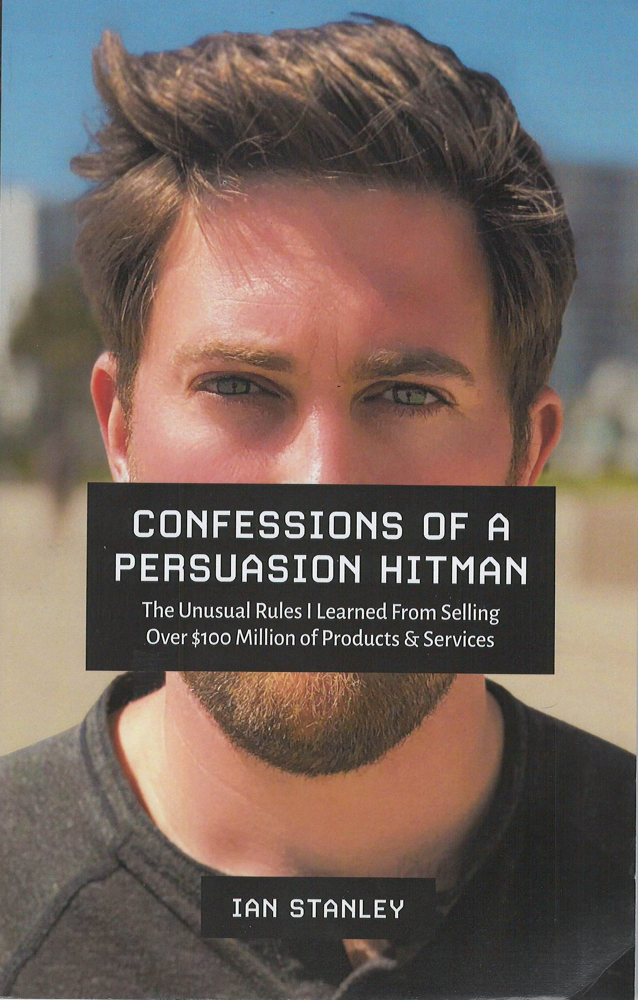

CONNFESSIONS OF A PERSUASION HITMAN
The Unusual Rules I Learned From Selling Over $100 Million of Products & Services
IAN STANLEY
Copyright © 2019 by Ian Stanley
Table of Contents
Introduction: How the Persuasion Hitman was Born
Rule #1: Set Clear Boundaries
Rule #2: Get the Highest Average Order Value on Every Purchase
Rule #3: Time and Money are Not Related
Rule #4: You’re Not Charging Enough
Rule #5: You’re Always Selling a Feeling
Rule #6: Do the Math
Rule #7: Combine Short Term Cash Flow with Long Term Recurring Revenue
Rule #8: The First Line is Most Important
Rule #9: Use the Same Language Your Prospects Use
Rule #10: Identify Your “Click Moment”
Rule #11: Sell Them What They Want. Give Them What They Need
Rule #12: Tell the Stories that Scare You the Most
Rule #13: Don’t Let the Stories You Tell Yourself Define You
Conclusion: Recap of the Rules and One Final Mission
Epilogue: What’s Next?
Praise for Confessions of a Persuasion Hitman
My business is up 113% just 34 days after doing one consulting day with Ian Stanley. It’s so shocking that I’m having trouble believing these stats.
– Eric Barstow
While I don’t know Ian Stanley, I’ve followed him for a while.
I’m not a stalker... just obsessed with lively minds doing interesting things.
So... while “not stalking” him I got my hands on his new book, Confessions of a Persuasion Hitman and loved it.
His take on subjects such as lifetime value, using the same language your prospects use and “telling the stories that scare you most” are particularly good... and he comes at the topic of persuasion as both a copywriter and a marketer which I really appreciate.
And his informal style, sense of humor and good summary (i.e. accentuation of the key points of each chapter) made it a terrific read and very usable.
– Brian Kurtz, Titans Marketing and Author of Overdeliver www.OverdeliverBook.com
Ian Stanley manages to breathe new life into proven, time- tested marketing principles with these entertaining stories from his own life.
I found myself looking at familiar principles with fresh eyes, and learned a few new tricks as well.
If you’re looking for a short, entertaining read that can also give you an idea or two about how to get more bang for your marketing buck, you’re sure to enjoy Confessions of a Persuasion Hitman.
– David Deutsch,
Top Direct Response Copywriter
www.davidldeutsch.com
Top Direct Response Copywriter
www.davidldeutsch.com
My gut told me Ian’s stuff was going to be different and I’m glad I listened. I had a handful of massive breakthroughs from ONE call with Ian.
On top of that, I made my YEARLY investment back within the first 2 weeks!
There’s no doubt I’ll make back 10x in this year alone... If you’re not in buying Ian’s stuff, you’re missing out.
– Joey
“God damnit, why didn’t I think of that?!?!?” That’s what I always think to myself after listening to Ian speak, or after reading his ideas in his latest book.
Ian’s a clear, concise and clever thinker that makes me jealous of his every word! Read this book. It’ll make you smarter. And your bank account will thank you for it.
– Joe Schriefer,
Publisher Agora Financial
Publisher Agora Financial
Ian Stanley is one of the most creative, original, and effective copywriters I know.
He combines a unique talent for storytelling with a superb understanding of fundamentals to create compelling, high converting sales copy.
Whether you are looking to create a new offer, make an absurd amount of money on an email marketing campaign, or to build your brand - there’s no one I would recommend more highly than Ian.
– Stefan Georgi
When I first met Ian Stanley I thought to myself, “This dude is too young to be this wise.”
And ever since reading Confessions of a Persuasion Hitman, my reaction is the same. Ian is just too young to be this wise.
This book contains tons of great lessons that can help you sell a lot more stuff if that’s what you want. And who knows, if you’re open to it you’ll discover all kinds of lessons that will help you in several other areas of your life, too.
– Doberman Dan,
Serial Entrepreneur and
Three-Time International Bestselling Author www.DobermanDan.com
Serial Entrepreneur and
Three-Time International Bestselling Author www.DobermanDan.com
“This is probably one of the easiest-to-read books about the stuff that really moves the needle when it comes to selling. Each chapter will make you money. And you can read like 3 pages at a time, which makes it great for finding little nuggets to implement in your business right away.”
– Justin Goff,
Entrepreneur/Copywriter
www.JustinGoff.com
Entrepreneur/Copywriter
www.JustinGoff.com
“When I was a full time Hollywood screenwriter... story came first and foremost. It was the ONE thing that would make or break your script from being sold. When I began consulting in the direct marketing world, I was shocked at how few people thought about using stories in their sales copy and sales messaging.
Ian Stanley is one of the few people who “gets it.” He has a talent for weaving wonderfully entertaining stories into his sales messages... stories that move you emotionally and... more importantly... get you to buy!
I finally just mailed Ian a copy of my credit card with a note that said “Just charge this whenever you have something new come out.” I don’t need to read his stories anymore. I know they work. (Though, I still read them because they’re entertaining.)
If you’d like to know the secrets for turning the stories of your life into cash-pulling sales hooks... then this will be one of the greatest books you’ll ever read.”
– Travis Cody, Screenwriter and 10-Time Bestselling Author www.TravisCody.com
FOREWORD
You don’t get what you deserve in life,
you get what you believe you deserve.
– Ian “I Deserve It” Stanley
Thus says Ian Stanley. Wise words from an old soul, because there are a lot of copywriters and marketers in the world today. Most of them live paycheck to paycheck even though they work 18 hours a day. They’ve learned the art of making other people millions of dollars with the written word, but fail to ever figure it out for themselves.
It’s pretty easy to take big risks and swing for the fences when it’s not your money on the line. But I have always felt that until a you risk your OWN money to test and scale your marketing... you’ll never really become a master. There’s simply no risk.
Risking... and losing... your own money accelerates the learning curve to true success. It forces you to see the world as it really is and not hide behind weeks of researching your ideal avatar. I’m not saying that research and knowing your avatar aren’t important... they are... but I can guarantee you that the marketer who spends money to test his research and attract his ideal avatar will understand their wants, needs and desires far deeper than any paid copywriter ever will.
There’s a reason I’m saying all this. Rare is the copywriter who hones their chops grinding it out for a few years... and then takes all the hard-won experience to make themselves a millionaire. Fewer still have ever done it by the time they were thirty.
Ian Stanley has done both. With a laser-like focus that’s practically unheard of in our “shiny object” culture of today, he managed to gain decades worth of in-the-trenches experience. He then used that experience to start, grow and SELL his own business. Hell, I know plenty of millionaire “guru” marketers who would never be able to sell their business, even if they wanted to.
I’ll admit... there’s a lot to hate about Ian. He’s young. Damn young. And yet he knows how to sell at a level that few professional marketers will ever achieve. And then there is the fact that he only works a few hours a day. I guess he missed Perry Marshall’s “Memo from the Head Office” about online marketing. The one that says “Thou shalt work 18 hours per day, 365 days per year.” (If you know Perry Marshall at all, you’ll get a laugh at that.)
To top it all off, Ian is good looking... in a 1/2 British sort of way... AND he’s funny. It’s enough to make me want to roundhouse kick him in the face. (And, since sensitive snowflakes have informed me that “words ARE violence”... the next time you see Ian with a black eye you’ll know that my words did that.)
In all seriousness, Ian is wise beyond his years. His level of success and his deep understanding of the skills of persuasion are a testament to the power of focusing full out on one single skill. (There’s a lesson there, especially if you’re a broke marketer living paycheck to paycheck while trying to do everything yourself.)
In Confessions of a Persuasion Hitman you’ll be entertained, you’ll laugh and you’ll learn how to simply make more money. It’s of particular note to recognize that this is Ian’s FIRST book. Follow him. Learn from him. And read everything he ever publishes. Because you only get better with time and experience and Ian is just getting started.
You’re now in the enviable position to ride his coat tails as he grows, learns and evolves. And, you’ll be able to make a substantial amount of money along the way. I wouldn’t be surprised to see Ian transform the field of marketing in some big, evolutionary way... just like I did when I invented the Video Sales Letter and the worlds first Copywriting AI. #HumbleBrag #Twice
P.S. He’s not better than me, though. ;-)
– Jon Benson
Inventor of the VSL
Founder of Copypro.ai
INTRODUCTION
How the Persuasion Hitman was Born-
I thought I was going to kill people for a living.
I felt like I had a purpose in my life. That purpose was to kill bad people so that they couldn’t kill good people.
I thought I was going to join Special Forces in the Army and then work my way into Delta Force - the most elite unit in the US Army.
See, when I was 15 years old, I was mugged at knife point outside a train station in London. Those few moments shaped the rest of my life. (I won’t tell the full story now, but I will at the end of the book.)
What people don’t realize about a mugging like that, especially when you’re only 15 and your identity is being formed, is you are completely powerless. When someone uses violence or the threat of violence to get something from you, they are disregarding your humanity.
To them you are no longer a human being. You’re simply a resource. You’re just bones wrapped in meat and skin. You’re an obstacle to what they want.
In those few moments, you are a slave to their commands. Your freedom is taken from you. Your humanity ripped out from under you. All for a cell phone and a bit of cash.
Experiences like that change you. A lot of people turn into victims. They accept themselves as prey. They become consumed by fear. They develop a sense of self-pity. The trauma is real and it’s ok to feel those things - but it’s up to you whether or not victimhood will define you moving forward.
I chose a different reality. I chose to become the type of person that would never become a victim. I refused to become prey.
The feeling I had after the mugging was the worst thing I’d ever experienced. That lack of control over my own life made me sick. I never wanted to feel it again...and I didn’t want anyone else to ever feel it either.
So I set out to become a “bad ass” as 15 year old Ian would put it. I wanted to become deadly. I wanted to become unkillable. Unfuckwithable.
Ultimately, I wanted control. I wanted to be able to control my safety so I could protect myself and those around me.
I did Kung Fu. I did Ninjutsu. Then I stumbled across some old World War II combatives training. That led me to a man named Rory Miller who was a prison guard for 25 years. He’d been in over 300 hand to hand encounters.
Right from the beginning of my training I was clear that I only cared about what WORKED. I wasn’t interested in fancy shit that looked cool. I wasn’t interested in combat sports. I was interested in how to break other human-beings bodies so that they couldn’t hurt anyone ever again.
I knew that the only way I was going to learn the realities of how to deal with violence was to learn from people who’d actually been through it. Not from some McDojo asshole who only cared about spinning kicks and bullshit blocks that didn’t mimic real violence. (The same goes for sales and persuasion. Learn from someone who’s done it, not someone who specializes in books and theories.)
That obsession took me to some interesting places. I learned some invaluable lessons. I learned about violence. But most importantly I learned about myself.
I felt like I was designed for violence. The mechanics of it came naturally to me. When other people freaked out, I got calm. Where others ran away, I stepped forward.
I felt like my purpose was to lead men into battle.
The Universe had other plans.
Six months after turning 21 I got a DUI. I had only had a couple of beers. I wasn’t speeding. Wasn’t swerving. I was barely over the limit. But none of that mattered.
It meant I had to put the military on hold. Then I later got diagnosed with Crohn’s Disease which meant the military was on hold - forever.
It’s an uncommon situation to feel like you know your life’s purpose at a young age and then not be able to pursue it.
But I believe that everything happens for a reason. (Which I’ll elaborate on at the end of the book.)
I took that obsession for control and turned it towards persuasion. I knew I was either going to work for the government or for myself. There was never an in between.
Young Ian thought he was going to be a hitman in the traditional sense. With that option gone, I decided to take a different path. One that didn’t exist. One that I’d have to forge on my own.
This became the path of the Persuasion Hitman. A gun for hire - not for killing - but for getting people to buy things.
The idea of the Persuasion Hitman was born out of my desire to play by my own game with my own rules.
I started out as a copywriter. I wrote words that convinced people pull out their wallets and buy stuff. Yet as a copywriter you are put in a box - consciously or unconsciously. Once you’re labeled as a copywriter you are expected to do what a copywriter does and charge what a copywriter charges. You’re also tainted by all those who’ve come before you, if a client has had a bad experience with a copywriter in the past, you’re automatically associated with them.
I wasn’t willing to accept that.
It also wasn’t a proper description of my skills. Copy was just my primary weapon of choice. It wasn’t my profession.
At my core I was a salesman. A persuader. It didn’t matter what medium I used, I got people to spend money on things that would improve their life. I used video, characters, writing, email, sales letters, phone calls, and anything else at my disposal to get sales.
So why limit myself to some preconceived idea of how I’m supposed to describe myself ?
That’s why I decided to call myself a Persuasion Hitman. Is it a bit cheesy? Yes. Does it turn some people off ? Probably. But most importantly, does it accurately describe my skills? Yes.
So ,what does a Persuasion Hitman do? What does a Persuasion Hitman charge? Whatever I want. There is no box, no game, no set of rules. I get to create my own reality.
Over my career as a Persuasion Hitman I’ve sold over a hundred million dollars worth of products online. I’ve worked with newbie entrepreneurs and 8 figure companies. I’ve been a gun for hire and owned my own businesses. I’ve built information product companies and I’ve sold an Ecommerce company to the fastest growing start up in Canada.
I’ve had an unusual life. Because of that, I’ve learned some unusual rules.
Those are the rules I want to share with you in this book. There are 13 in total. Yes, that’s an “unlucky” number, but I don’t believe in bad luck. I make my own luck.
Warning: This book swings from intense and heavy (like the intro you just read) to lighthearted and funny (depending on your sense of humor.) It’s a bit of rollercoaster and I wouldn’t have it any other way. Some of lessons are story- based. They tend to be more entertaining. Some of the lessons are just straight up actionable info. Slightly less entertaining but just as powerful.
I’ve done my best to make this something you don’t want to put down. You can rip through it in a day and then reread it again tomorrow. I’ve found that I learn the most when I read one book ten times instead of reading ten different books one time each. I hope this becomes one of those books you read again and again.
One note on sales and persuasion before we begin:
Each of us is a salesperson. We’re all selling all the time in some fashion. Sometimes it’s a traditional sale with an exchange of money for goods or services. Sometimes it’s selling your significant other an idea - like watching Game of Thrones instead of the Kardashians. And sometimes it’s selling yourself on something you know you need to do - like going to the gym when you don’t feel like it.
At the heart of selling is persuasion.
Now I wanna be the first one to say it - persuasion is a dirty word to some people. It can conjure up images of slimy used car salesman with slicked back hair and tacky suits. It’s the tool of serial killers and cult leaders. It’s the foundation upon which tyrants like Hitler built their empires.
Yet persuasion is also the tool of the Good. It’s how Martin Luther King Jr changed a country. It’s what Churchill used to rally the Allied Nations against the oppression of the Nazis. It’s a power you can wield to convince yourself to do the things that matter most in your life.
Persuasion itself is not inherently good or bad. It simply exists. It’s up to you how you use it. My hope is that you’ll use it for the right reasons. And you’ll be able to see when it’s being used against you for the wrong reasons.
I’m aware that the name Persuasion Hitman can create an air of criminality or darkness or an unethical vibe. I want to be clear that nothing could be further from the truth.
I’ve never sold something I didn’t believe in 100%. I think that’s been one of my secrets to being great at what I do. It’s a lot easier to sell incredible products that truly help people - especially if you use the product yourself. (But it doesn’t matter how good the product is if you can’t get anyone to buy it.)
If you sell shitty products or don’t care about your customers, I believe that will come back to you in a bad way. Trust can take minutes, hours, days, or months to build. But it only takes one minute to lose it forever.
It’s not worth overstepping your morals to make money. It won’t work out long-term. I’ve seen plenty of people bring in massive cash windfalls, only to lose it all because they were unethical.
So whether you’re engaged in the act of selling for a living or not, understanding sales and persuasion is an invaluable skill that will serve you in any path you choose.
My goal with this book is to take you on an entertaining and useful journey through the rules I’ve learned in my lifetime from selling over $100,000,000 worth of stuff.
I’ve used all sorts of methods you’ve heard of - and plenty you haven’t.
I’ve done most of the stuff you’ve thought of: Facebook ads, Instagram ads, Youtube ads, blog posts, email marketing, long form sales letters, funnels, etc.
Maybe more importantly, I’ve done some real weird shit that you’ve probably never thought of: viral sales videos where I drink out of a toilet with a water filter. Parody videos of famous entrepreneurs. Changing the “from names” of email marketing to odd stuff like “Your Abs” or “Your Wallet.” I’ve even sold $10,000 workshop tickets by sending condoms in the mail.
I’ve sold just about everything you could think of. $7 e-books, $70 water pitchers, $1,000 courses delivered via email, $2,000 solar generators, all the way up to $25,000/ year memberships in our LionHeart Pride Mastermind.
None of this is meant to brag or sound self-important. It’s to illustrate that I actually know what I’m talking about. I’m not one of those d-bags on the internet who read a few books about persuasion and then decided to write my own book.
My goal here isn’t for you to model the chaos of my efforts. It’s for you to understand the underlying principles and strategies that have allowed me to sell a whole bunch of stuff...without a whole lot of work.
Most books about persuasion will teach you tactics and techniques. “Here’s how to run ads or write a headline.” I don’t want to do that.
Tactics and techniques only work in certain situations, and they rarely stand the test of time. They fade like writing in the sand.
Principles are timeless. Especially the principles of persuasion. Humans are still driven by the same core desires as we were 10,000 years ago. The trick is to tap into our primal nature to make selling an effortless act.
Persuasion is not a goal. True persuasion is the by-product of empathy and understanding.
A final Pre-Amble:
- I swear. To hold back swearing would be inauthentic. I swear a lot less than I used to, but it’s still present in my speech. I’m not willing to steal from you the experience of my truth by removing those words.
- I’m a guy. That means I’m going to use primarily male pronouns for the sake of ease and conciseness, not because I’m biased or sexist. It also means it’s likely that men will identify with me more. However, a shocking amount of women read and identify with my material too. As far as other genders are concerned, I hope it resonates with you too.
- I’m blunt and straight forward. Death is after us all. I may have the time for wasted words, false promises, bush beating, partial lies, and half-truths...but I don’t have the energy for it. And I respect your time and energy too much to lie to you or waste your energy.
- You may perceive me as arrogant at times. Now, this may just be own English shame...but certain things I say will likely seem arrogant or self- aggrandizing. That is not my intention. Any talk of my accomplishments or success is only written about if I believe it will serve you. That could be to show you what’s possible, demonstrate a point, or tell a story to increase your recall. Emotion drives and encodes learning. Stories are inherently entertaining. That being said...I will also share my darkest and most embarrassing moment.
How to read this book: (I know that may sound insane, I mean you just read one word and then the next, but I wanna make sure it’s crystal clear how it’s organized):
This book is structured in the way that I think makes the most sense.
Each chapter title is one of the 13 rules. Clever, I know. I also came up with a little sub-title that describes the story or lesson the teaches the rule. At the point in the story or lesson where the rule appears, I highlight that rule in bold.
Interspersed throughout the chapters are little sections I call “mini-lessons.” They are directly related to the section you’ll be reading, but instead of allowing them to interrupt the flow of the book, I’ve put them in their own fancy little gray boxes so you can read them whenever it makes the most sense to you.
Now that all the intense shit is out of the way, let’s get started.
RULE #1:
SET CLEAR BOUNDARIES
-The First Sale I Ever Made-
I started my career as a salesman a little younger than most.
I was three years old. It’s a story my mum loves to tell me.
Apparently here’s how it went:
My mum: “Ian, go clean your room and I’ll give you candy.”
Little (bastard) Ian: “Give me candy and THEN I’ll clean my room.”
This didn’t make my mum particularly happy. Her plan was to use that trick for at least a couple more years.
But little Ian wasn’t about that life. This experience (somehow) taught me one the simplest and most important rules of sales.
Rule #1: Set clear boundaries.
Start off right away by defining:
- What you will and won’t do for a sale.
- What you will and won’t do once the sale is complete.
- What your expectations are and how you’ll meet them.
- What their expectations are and how you’ll meet them.
What I’m known for in the world of copywriting is how much I make from such a small amount of work. It wasn’t until recently that I realized that had less to do with my skill... and a lot more to do with my boundaries.
I’m crystal clear about what I will do and more importantly...will NOT do. I have friends who are just as good as I am at writing, but they work literally ten times more than I do and tend to make less money.
Clearly defined boundaries are my secret weapon. They’re what allow me to work as little or as much as I want. They’re what allow me to make a living AND have a life.
Violate your boundaries at your own risk.
RULE #2:
GET THE HIGHEST AVERAGE ORDER VALUE ON EVERY PURCHASE
-My Second Sale:
The World’s Most Profitable Lemonade Stand-
When I was about 10 years old, I learned something about sales that most grown adults have never learned.
As a kid it’s pretty common to decide you’re going to have a lemonade stand. I had run multiple stands in the past with some moderate success.
But little did I know, this day would shape the rest of my life. (Which is something I’ve only recently realized.)
Phase 1: Acquiring goods.
First, we had to start with the most necessary element of any lemonade stand. Lemons.
Normal protocol would be to head to the local grocery store to procure the fruits. But I wasn’t about that normal life.
Behind my house was a large tumultuous ravine. On the other side of that ravine was a 6-foot tall fence. On the other side of that fence was a large lemon tree patch.
Inside that lemon patch were two large Rottweilers.
I, Ian Stanley, craver of adrenaline, volunteered to get the lemons while my buddy DJ sat and watched. I climbed the fence and sprinted into the patch. I knocked lemons off the trees and stuffed them into my shirt as fast I could.
Then I heard the dogs. That was my signal. I sprinted towards the fence and launched the little yellow grenades over the fence. Then climbed as fast as I could while I watched the dogs close in on my ankles. They didn’t get me.
Boom. Free lemons.
Mini-lesson: Cut your costs of goods sold whenever possible.
They say when life gives you lemons make lemonade.
Well...when life doesn’t give you lemons say fuck it and take them. (Note: for legal reasons I have to emphasize that I am not encouraging theft.)
Phase 2: Add SKUs.
After we made the lemonade, we enlisted my grandmother to make her famous cookies. Now, I know everyone says their grandma makes good cookies. Most of them are lying. I’m not. Grandma Ginnie was a straight up cookie gangster. Her iced peanut butter cookies were legendary.
We bagged them up in packs of 1 and 3. I’ll explain why in just a second.
Mini-lesson: Exploit elderly family members for free labor whenever possible. Also, I’m not a lawyer and that is not legal advice.
Phase 3: Give them what they need.
Now we had lemonade and cookies. We were already ahead of the game and had more products than most lemonade stands. But that wasn’t enough.
Phase 3 had been set in motion far in advance.
See, I lived near a golf course. And around dusk I would go onto the golf course and comb the bushes for lost golf balls. I’d walk around the edges of the water and pick up balls that old rich white dudes were too lazy to find for themselves.
I then separated the balls into two piles. One was all the normal balls. And the other was the ProV1s.
Now we had everything we needed to sell. All that was left was...
Phase 4: Select a location.
Lemonade stands are a lot like Real Estate. It’s all about location.
I knew just the spot.
First off, go where to money is. We started with a rich neighborhood.
Inside that rich neighborhood there was a well-trafficked street that happened to intersect with the golf course. So we set up shop where normal cars AND golf carts had to pass right by us.
Mini-lesson: It doesn’t matter how good your product is or how well you can sell if you don’t have any traffic.
The better the traffic, the better the sales.
Phase 5: Set your prices.
Now we’re at the critical juncture of any successful (or unsuccessful operation). Pricing.
Most kids were charging 10 to 25 cents per cup of lemonade. Not us. We were starting at a buck. I knew with our location and skills we could charge 4 to 10 times the competition. (If you could even call those other kids competition.)
Lemonade: $1 for the first cup. 50 cents for the second cup. Gotta incentivize them to spend more.
Cookies: 1 for $1. 3 for $2. What self-respecting golfer would ignore such a no-brainer offer?
Golf balls: “Normal” golf balls were 50 cents. ProV1s (a higher quality Titleist ball that claimed to add 10-30 yards to your drive) were $2.50.
Now here’s the best part about the golf balls. These were likely balls these guys had already paid for. They lost them, I found them and sold them back to them.
Mini-lesson: The best practice for your first upsell is almost always to sell them more of what they’ve already bought. Especially when they can’t continue with their activity without that item.
Golf balls are a pretty important part of golf.
Phase 6: Make it Rain.
Now for the best part. Time to sell.
By 10 years old I was already a seasoned salesman. I had been selling my parents on getting whatever I wanted since I was 3. I was a little bastard who was a little bit too good at structuring arguments. Not great for my parents, but great for running a lemonade stand.
I always met the customer where they were. I entered the conversation that was already going on in their head.
Mini-lesson: The most important question you can ever ask before you start a sales process is this: Where are they now?
In other words, where is your prospect in this moment? What is their level of awareness?
The answer to that question will tell you exactly where to meet them.
It was hot out, they were thirsty.
“How ‘bout a nice glass of lemonade to quench that thirst sir?”
Next, “you’re going to want to balance out that acidity with something nice and sweet. How about my Grandma’s famous cookies? Let’s be honest chief, we don’t know how much longer she’s gonna be alive. These could be the last cookies she ever bakes. You wouldn’t wanna miss out.”
Mini-Lesson: Always add scarcity and urgency whenever possible.
Did I think Ginnie was on the edge of death? Of course not.
Yes, she fell asleep while driving, but she was still going strong. Ted the golfer didn’t need to know that.
The final step (if it was a golfer) was obviously the golf balls.
Little Bastard Ian: “You need some extra balls Ted?”
Ted: “I think I’ll be ok but thanks little guy.”
Relentless Little Bastard: “Look Ted, let’s get real. I saw you tee off on the 8th hole. You’re hooking harder than Julia Roberts in Pretty Woman. We both know you’re gonna lose more balls. Your wife already took your balls at home, don’t let the same thing happen on the golf course.”
Ok, I didn’t say all that. But I did point out that they may as well grab some extra balls at a deep discount in case they lost some. They typically listened.
Phase 7: Count Your Winnings.
So what was the result of all this sales mastery?
Well, the average lemonade stand (according to friends of mine) would typically bring in $10 to $15. A nice payday for a ten year old who was exploiting his parents for free rent and food.
But we weren’t average.
We sold $63 and some change that day. A new record. We were legends of the streets.
Mini-lesson: Always exploit cheap child labor whenever possible.
Works well with dumber, younger children. Best when you are also a child and not a legally formed business entity.
That left $58 to be divided between DJ and I. $29 each. Plus, it was pure profit due to my lemon stealing, grandma exploiting, golf ball thieving ways. Not bad for a few hours work. (Then, like a true entrepreneur, I reinvested that money into Pokemon cards. Holographic Charizard was worth a small fortune to a 10 year old.)
That day we made 4-6 times the industry standard. All from applying some simple sales rules that most grown adults still don’t understand.
So let’s break this all down into some nice, digestible lessons. Then I’ll tell you the big mistakes I made that left a whole bunch of money on the table.
Lesson 1: Keep COGS as low as possible without skimping on quality. (Aka steal fresh lemons.)
Lesson 2: Only do what you’re great at. I’m a salesman and adrenaline junky. My job was to steal lemons and make it rain. Not bake cookies and mix the lemonade. (I still apply this today. When I write copy and make videos a lot of money gets made. If I start doing anything else the whole business suffers. So I spend as much time as possible doing ONLY “money tasks.” Specifically “Money Later” and “Money Now” if you’re familiar with my 3 types of money concept.)
Lesson 3: Give them what they need. You can’t play golf without golf balls.
Lesson 4: Location, location, location. You can do everything right in the wrong place and you won’t make a dime. I could have the best sales funnel in the world but if I’m trying to advertise on MySpace in 2019 I’m not gonna make much money.
Lesson 5: Pricing and contract structure are the secrets to working less and making more. If you know your worth, you can charge premium prices. (Especially if like young Ian, you don’t have emotional blocks around charging a lot.)
Lesson 6: Always have an Upsell. Focus on increasing your AOV (Average Order Value). My lemonade and cookie pricing was all set up to extract the most amount of dollars from each customer. Offer discounts for people buying in bulk. Do everything in your power to incentivize buyers to buy as much as possible.
Lesson 7: Ethically prey on the insecurities of your potential customers. Ted knew he lost golf balls. I needed to bring that to his attention. There’s nothing unethical about making people aware of their shortcomings if your overall goal is to improve their life. Imagine how much it would suck for Ted to get to hole 16 with no golf balls. No one wants to be that guy.
Lesson 8: Change the rules or change the game. Change the rules - All the other kids simply accepted that lemonade was 10 to 25 cents a cup. They were confined to the rules someone else had set. I changed the rules.
Change the game - It’s called a lemonade stand. You sell lemonade. That’s the game. We added cookies and golf balls to the mix. Sometimes all it takes is some balls to change the game.
(Note: This is how the idea of the Persuasion Hitman was born. As a copywriter you are put in a box - consciously or unconsciously. Once you’re labeled as a copywriter you are expected to do what a copywriter does and charge what a copywriter charges. You’re also tainted by all those who’ve come before you, if a client has had a bad experience with a copywriter in the past you’re automatically associated with them. I wasn’t willing to accept that.
What does a Persuasion Hitman do? What does a Persuasion Hitman charge? Whatever I want. There is no box, no game, no set of rules. I get to create my own reality.)
Lesson 9: Learn from your mistakes. Looking back on this from my current perspective as someone who’s sold over a hundred million dollars worth of stuff, I see some big mistakes we made.
Mistake #1: No cookie samples. I should’ve broken up a few cookies into little bite-sized samples. When you have a superior product you should let people try before they buy. I’ll bet we would’ve sold more if we had done that. (Except I’m pretty sure we sold out of all the cookies anyways which leads to rule #2.)
Mistake #2: Don’t get high on your own supply. 10 year old was a chunky little fella who LOVED cookies. Pretty certain I ate a few of them myself.
Mistake #3: We didn’t have a good sign. I actually don’t even remember if we had a sign. I think we just had the table. My artistic skills were non-existent so I was never the “make a pretty sign guy.”
At the point in my life, I’m aware that the sign didn’t have to be pretty. It just had to say the right thing.
The difference between a good sign and an average sign can be the difference between a successful business...and a non-existent business.
When I was in college my best friend decided to try panhandling for an experiment. He was a short little black guy with long dreads. We threw a big beanie on him and some baggy clothes and sat him on a street corner in Santa Cruz, CA.
I made his sign for him. “Obama ain’t the only black man who wants change.” (This was during the Obama era where Change was the theme.) Each person who gave him money said “Great sign man.”
A few years ago I read a story about a guy who made a million dollars in 100 days from his fruit stands. The biggest lever that took him from hundreds of dollars a day to over a thousand a day? The signs he used. He split tested all sorts of variations until he found his winner.
The winning sign was simple: “Picked Today” or “Today’s Pick”
Words matter. Spoken or written. I can only dream about the profits we would’ve raked in if we had the right sign.
Which leads me to...
Lesson #10: Always celebrate your wins, no matter how big or small. As sales people we have a tendency to compare today to yesterday. Or today to tomorrow. Or worse, today to someone else’s yesterday or tomorrow.
I remember the first time we sold over $10k in one day in my water filter business. I didn’t celebrate or allow myself to feel good. Instead I said “It could’ve been better. I’ve made more before.”
But the reality was I had only made more than that in a day in other businesses. Ones I didn’t own. It was a HUGE win. I should’ve celebrated.
If you shut down your emotions when you feel good, you’re going to stop seeking out the things that make you feel good. It’s dangerous road to downplay your wins. Winning, no matter how small, tends to lead to more winning.
Celebrate your wins. Learn from your mistakes.
If you can’t change the game, change the rules. If you can’t change the rules, change the game.
If you can’t do either, you’re in the wrong place.
Now for the final lesson:
The true difference between my lemonade stand and everyone else’s wasn’t my ingenuity or ability to sell. It was my ability to extract as many dollars as I possibly could from each purchase.
I had no idea what it was called or what I was doing at the time, but I was focused on improving my Average Order Value (AOV). The higher your AOV, the more you’re gonna make.
I would’ve had to sell 63 cups of lemonade to make $63. But by adding cookies and golf balls we were able to make $63 from selling 20-30 cups of lemonade.
In the world of real business (not that my lemonade stand wasn’t legit), especially direct response where you’re tracking the ROI of every dollar you spend on ads, a high AOV is a game changer. It’s the difference between an ad campaign dying after a few thousand dollars in ad spend...and scaling to spending thousands per day.
For example, we used to sell a $7 ebook called The 4 Foot Farm. We got to the point where we were spending $15,000 to $20,000 a day on Google Display Network.
To break even on $15,000 a day in ad spend we would have to sell 2,143 of these $7 ebooks a day...which is a LOT.
Our conversion rate was good on the front end. But that wasn’t the reason we were able to scale it up so high.
See, right after someone bought the book they saw an offer (a one-click upsell) to get the physical version of the book shipped to them for $9. Then they got an offer to buy some seeds for their veggies for $27/mo. I think we also had a newsletter in there for $20/mo. And then finally... we had a $497 physical product that made it insanely easy to grow up to 100 punds of food in a 4 by 4 foot space. For the people who bought that, we had a $100 offer to get a lifetime warranty.
I couldn’t believe it, but 2% of these people who bought a $7 ebook would buy the $497 product. And none of these people were angry about the upsells because they were HIGHLY congruent. A physical version of the book, seeds, and a faster, easier way to get their desired result. It was a smash hit.
The result of all this? Our $7 ebook had an AOV of $40-$44. That means we could spend up to $40 to acquire a customer. That also means we didn’t have to sell 2,143 ebooks a day, we only had to sell 375 to break even. That’s how you scale an offer or a company.
We had a system for creating these high converting $7 front end offers. We had a template for our sales pages. Basically I just had to write a lead (the intro of a sales page) and some bullets. We already had all of our language for the close and offer dialed in, just had to fill in the blanks on that part.
So we used this formula to test as many different front end offers as we could.
I remember we had one ebook called “101 Energy Saving Secrets.” It did really well on the front end, similar conversions to the 4 Foot Farm. But we couldn’t get our AOV high enough with our upsells to really scale the traffic.
The problem wasn’t the front-end offer. It was that we couldn’t find the right CONGRUENT upsells to get our AOV to the level we needed.
That’s why you need to begin with the end in mind when you’re thinking about your offer. What else can you sell them? How else can you help them? What congruent upsells will convert well?
The 101 Energy Savings Secrets “failure” was an important lesson for me because it demonstrated how important AOV really is...
Which leads (damn near perfectly) to the overall rule of this chapter...
Rule #2: Do everything in your power to get the highest Average Order Value possible on every purchase.(Especially when you’re spending money on advertising.)
Mini-lesson: There are only 3 ways to truly grow a business. (I’m not the creator of this concept by the way, but here’s a description in my own words.)
- Increase your number of front end customers - This means bringing in more buyers. More buyers tends to mean more money. When it comes to getting front end customers it typically comes down to the OFFER. Find the thing the market really wants and then sell the shit out of it. Some products may be amazing but aren’t right for front end acquisition. Don’t fall in love with your products, fall in love with finding ways to help your customers...and get paid in the process.
- Increase your average order value or customer transaction size - This means maximizing each purchase your customer makes. What could you offer them RIGHT AWAY that would improve their life, your product, their buying experience, and make you more money? Figure that out and you’ll be primed to scale. You just got a masterclass in improving your AOV from 10 year old Ian. If I could give one wildly potent tip about improving AOV it’s this: focus on upselling products that are HIGHLY congruent. Products that ENHANCE your initial product, get them results FASTER, or offer a DONE FOR YOU or AUTOMATED solution.
- Get your customers to buy more stuff or buy more often - This is where the Lifetime Value (LTV) comes into play. You know who your best potential customers are? People who’ve already bought from you. Yet it’s incredible how many people forget this or ignore it. (I talk more about this in Rule #7.) If you have a list of customers, you need to foster that relationship and sell them more stuff they want and need. The people who ignore this tend to die painful business deaths. That’s why you’ll hear the sharks on Shark Tank say “You have a PRODUCT, not a business.” One product is not enough. It’s a good place to start, but it’s not the end. And if you don’t have other products? Find other people who have great products that your audience wants and sell them those.
RULE #3:
TIME AND MONEY
ARE NOT RELATED
-My Third Sale: How I Got Paid $50 an Hour to Watch TV When I Was 12-
When I was 12 years old, my mum helped me make my first business card.
She was supportive of my entrepreneurial dreams (despite telling me to “get a real job” or “be an accountant” countless times after I finished college). Support around you makes a big difference. It shapes how you feel about doing things on your own. It lets you know that it IS possible to make your own money.
So what was this business card?
It said “Stringin’ by Ian.”
I started a tennis racket stringing business. The funny thing is I think we were trying to rhyme “stringing” with “Ian.” It doesn’t even rhyme but that’s ok.
We bought a used stringer from a friend for something like $400 or $500. We bought some reels of string...and my parents started pimping my business at the local club. (I never paid them back for the stringer.
Mini-lesson: If your parents forget to make you pay them back, don’t remind them. It’s all about the bottom line.)
Most stringers at racket clubs were charging $12 to $15 to string a racket. I started at $25. Again, I don’t know why I was willing to charge more than everyone else, but I was. I was 12 years old with ZERO experience, so why not be the premium vendor?
The average stringer would finish a racket in about 30-40 minutes.
In the beginning it took me 45 minutes to an hour. But I quickly got to the point where I could string one in 16-20 minutes on average. (I got one done in 13 minutes but that was too much effort. I preferred to go a little slower and watch TV while I did it.)
Mini-lesson: As adults we tend forget that we sucked at EVERYTHING as a child when we first started. No matter how physically talented or smart...you were bad (at least to some degree) on your first try.
As adults we tend to expect ourselves to excel at new things immediately. But we forget that you have to be bad in order to get good. Being bad for you may only last for 10 minutes or a day or a week. Or it may last for years.
The problem is we expect
Realistically I was able to do 2 rackets per hour when you account for taking the racket off the stringer, measuring string, etc.
That’s $50 per hour at 12 years old. Not. Too. Shabby. I was getting paid more than the average adult per hour to weave some string and watch TV.
Looking back at this experience I’m able to see that it was NOT a normal experience. I can also see that it has shaped my relationship to money in a profound way.
All the other kids who wanted their own money were doing traditional jobs. Mow a lawn get paid $5 or $10. Get a paper route and work your ass off. Do your chores and we’ll give you some allowance.
Mini-lesson: I’ve learned from my show Entrepreneurs in Vehicles Getting Beverages (you can watch it on my Youtube channel) that a lot of entrepreneurs started a business as a kid.
Whether it was a side hustle like reselling candy bars at school, or something more formal like stringing tennis rackets.
The entrepreneurial/sales spirit seems to start young. But that doesn’t mean you can’t develop now if that wasn’t you...you have this book. No need to worry.
I learned at a young age that I could make more money than everyone around me in less time. All I had to do is get good at ONE thing and charge money for it. (This concept is something I’ll elaborate on at the end of the chapter.)
Most importantly I learned what I consider to be potentially the most important money lesson of all:
Rule #3: Time and money are not related.
See, time and money have NO relationship in this world. We just think they’re related.
I know some people will fight me on this so let me explain...
Society has conditioned us to associate time with money. We were conditioned to exchange time for money from a young age. Our first gigs as kids pay us hourly. One hour is worth X.
Then as we get older we get paid a salary. One year is worth X.
It’s even a common saying in our society: “Time = Money.” But it’s not true.
What further magnifies the problem is that we tend to learn skills that require us to be PRESENT to make money.
This was the case with stringing rackets. I had to DO the work. The same thing happened when I was a tennis coach. Parents would pay me to hit with their kids in high school and I’d charge $20 an hour. I had to be ON the court to get paid.
I coached tennis again after college and earned $70 to $100 an hour. Not bad for a 22 year old. All my friends were making $10 an hour to $50k a year. Here I was teaching tennis to rich housewives and kids making way more than all my buddies. Plus I made my own schedule and had freedom.
But when I looked around at the tennis pros who were 35 to 45 years old I saw that they were making the same money I was. I wasn’t charging less than them because I was younger. In fact, I charged more than most coaches because I knew I was worth it. (Seeing a theme here?) There are tennis coaches who’ve been doing it for 40 years that still charge $40 an hour.
Making $70 to $100 an hour as a 22 year old is a monetary death sentence for most people. It’s golden handcuffs.
Thankfully I saw the glass ceiling. The older coaches weren’t happy with their jobs. They were trading time for money. Plus, if it rained, you didn’t get paid. If someone got injured, you didn’t get paid. Or if hot housewife #3 drank too much wine the night before, you didn’t get paid.
I was a slave with the illusion of freedom.
Somehow I was aware of that so I kept trying to make money online.
The problem was I was trying to do everything online.
- Write copy
- Build websites
- SEO
- Paid traffic
- Product creation
- Blah blah blah you get it.
Long story short, I wasn’t making any money. And I noticed a pattern emerging amongst the people in the forums online.
They were all trying to do everything too. And they were broke. (My guess is they’re still broke.)
So I decided to stop doing everything and just focus on one skill. (A concept I learned when I was 12 years old.)
I chose writing.
So every single day I woke up and hand copied a sales letter for an hour. I didn’t miss a day.
One month later I got a job working with an internet marketer in the personal finance space.
We had an email list of over 1 million people and I wrote all the emails. I learned a TON. I was only making $20 an hour, but I knew I was developing a SKILL that would pay dividends later.
I used my money from tennis to live, and put ALL the money I earned from copywriting into a savings account. Six months later I quit teaching tennis and went full on into copy.
I was only making $3500 to $5,000 a month but I was GROWING. Also, that was a LOT of money to me then.
Now that skill that only paid $20 an hour when I started out, is worth $2,000 an hour in the rare cases where I do hourly consulting.
Now when I work on a sales funnel for someone else’s company I have some simple rules to ensure my payment is not based on my time commitment:
- I won’t start from scratch. The only way I’ll do it is if they have an existing funnel that’s already getting sales. The amount of effort it takes to build a wheel is significantly more than it takes to takes to make an existing wheel spin faster.
- I ensure that my work is incentive driven. I will only play if it pays to win. Humans are incentive driven creatures, we like to be rewarded for doing a good job.
- I ask them this question: “Do you care how much work I put in, or do you care that I win?” If they say they just care that I win then I know I have the right type of client.
- I set clear boundaries of what I’ll do...but more importantly I make it clear what I WON’T do.
- I will only do the work if it pays a minimum of $25,000 up front. I do this for a couple reasons. One, the more I charge a client, the better a client they tend to be.
The two times I’ve discounted my up front fee are the only times I’ve had to deal with bad clients. Two, it keeps me from taking on too much outside work. The reality is I will make more money in the long-term from making my own funnels so I make sure not to get too tempted by quick cash injections from clients. (These days I very rarely do client work. It has to be a product and client that I love...and they have to be willing to pay a lot.)
The reason I’m telling you all this is because it comes down to that one simple rule:
Time and money are not related.
When you’re able to not just understand that concept, but apply it, you can experience exponential growth in your income and wealth.
You need to sever that relationship. Kick the time = money belief to the curb like a cheating spouse.
I’m not saying it’s easy. It’s ENGRAINED in our society. But that doesn’t make it true. And it doesn’t make it useful.
This next short story is another little lesson to further prove that time and money aren’t related...
RULE #4:
YOU’RE NOT CHARGING ENOUGH
-A Short Story To Prove Time and Money Aren’t Related, $5k in 30 Seconds-
I sat on the couch with my buddy as I was sending off a proposal and asked if I should charge $20k or $25k upfront to write some copy.
“$25k.” He said. “Why not?”
So I did it.
The client said yes.
Rule #4: If the price you’re charging doesn’t make you a little uncomfortable, you’re not charging enough.
There’s an old Dan Kennedy quote that goes something like this:
“Charge as a high a price as you can while keeping a straight face.”
I personally love in-person conversations. I still love a handshake and drink. I think the digital age is crippling our ability to communicate and connect.
HOWEVER, this is one area where it’s an advantage. You can send an email or quote your price over the phone where they can’t even tell if you’re keeping a straight face.
Get uncomfortable with your pricing. If you’ve been charging the same price for a year then that’s too long. As you improve you should increase the prices accordingly.
My Executive Coach Brent told me a really cool story awhile ago. He said he learned what price to charge from his grandmother.
She had a simple rule: “Whatever you want to charge them, triple it.”
Now you may be thinking this was just some crazy old bat who was babbling nonsense. If that’s what you’re thinking... you’re wrong.
This woman charged $80k just to do the interior design of someone’s home. $80,000! I can’t remember the exact number, but Brent said she charged something like $20k just to step in their home and THINK about doing the work!
And to add some icing to the money cake, she did this in the 80’s, 90’s, and 2000’s. That’s a king’s ransom these days.
I know it’s easy to say “just charge more.” But that doesn’t work. I’m aware of that. You have to go a little deeper...
If you don’t believe you DESERVE that amount of money then you won’t be able to charge that much. Your self worth has to match up with your worth in the business world. If they don’t match then you won’t be able to charge more, no matter how good you are or how much you deserve.
You don’t get what you deserve in life, you get what you believe you deserve.
Mini-lesson: This also applies to charging LOW prices. There are times where I’ve sold a product for $7-$17 that I know is worth literally 10x to 100x that or more. I know I’m massively overdelivering in value, and it makes me uncomfortable. Sometimes you may actually be charging too little. But that discomfort feeling from charging a low-price can be valuable. It can be an indicator that you’ve created an irresistible offer.
I have a product called the Welcome Email template that I sell for $7. The template is something I’ve developed over 5 years and countless tests. Millions in advertising were spent to test it and perfect it. It’s the most important part of an email sequence. I could easily charge a lot more for it. But I know that if I can get someone to buy and USE that product, they’re likely to buy a LOT more stuff from me. I’ve had people who found me from my $7 offer that end up attending my $10,000 email copy and deliverability workshop that I run.
Moral of the story: The “uncomfortable about the price” thing can swing both ways. It can make you uneasy to charge a lot. It can make you uneasy to charge a little. Either way, that discomfort can be a compass that you’re stumbling into fields of gold.
RULE #5:
YOU’RE ALWAYS SELLING
A FEELING
-How to Use the 8 Core Emotions to Make People Cry and Buy-
I want to teach you one of the most effective ways you can build desire in someone.
This works in marketing and other areas of your life. (You’ll see what I mean in a second.)
I’m going to explain this in one of the best ways I know how: with an analogy.
It IS slightly “inappropriate” or “naughty” but it truly is the best way for you to understand this concept so bear with me.
There’s a selling method out there called Results in Advance. Now I didn’t come up with that phrase. (I think it was Frank Kern.)
The idea is that you create results for your prospects BEFORE they buy. It’s a good concept, however it’s not the reality of how you should think about selling.
See, no one in the world has EVER sold a result. They’ve never sold a product, widget, thing, service, etc.
People don’t buy results, they buy the feeling that result, product, etc provides. They may not be aware of it, in fact they’re almost never aware of it, but it is the reality behind what’s driving their buying decision.
The only thing anyone has ever sold is a FEELING.
That’s why I want you to focus on Feelings In Advance instead of Results In Advance.
I’m not talking about some foof-y woo-woo description of “feelings.”
ULTRA IMPORTANT
I’m talking about feelings like joy, fear, passion, love, anger, pain, shame, and guilt. (These are the 8 core emotions.)If you can create these Feelings in Advance then you allow your prospect to experience the feeling your product will create BEFORE they buy it. That feeling will get them to take action to buy.
But it’s not the full feeling buying will create. It’s just a taste. (Think just the tip here. It feels good but you NEED more to feel fully satisfied.)
Rule #5: You’re Always Selling a Feeling.
There’s one primary focus of creating those feelings that’s more important than anything else. Can you guess what it is?
It’s desire. You need to create an insatiable desire in your prospect.
IMPORTANT
You can use fear, love, pain, joy, guilt or other emotions to create DESIRE.
IMPORTANT
During any sales message, presentation, call, or whatever else, you are doing one of two things:
- Amplifying a feeling (or feelings).
Or...
- Reducing a feeling (or feelings).
You either turn up the fear, or you reduce the fear. You increase the pain, or you take it down a few notches.
Focus on the amplification or reduction or feelings and you have a potent strategy for building desire.
IMPORTANT
Now here’s a (slightly inappropriate) way to build desireThe best way to create sexual desire is to tell someone what you’re going to do to them.
“I’m going to kiss your downstairs.”
“I’m going to make you feel amazing.”
You’re creating Feelings in Advance.
Imagine how good it will feel when you’re debt free. When you don’t even notice paying the bills because it barely makes a dent.
Pay attention to the language and the frame.
IMPORTANT
It’s “I’m going to make you feel so good.” NOT...
Advanced Emotional Selling
If you’ve ever read any of my sales pages, then you’ve probably realized that I love to use stories to sell.
My favorite way to start any sales page, email, pitch, stage presentation, etc is to use a story.
The more emotional that story is, the better.
Now here’s something weird I learned when I was speaking at a copywriting conference...
There were about 50 people in a room who all paid around $12k to be there.
I was one of the speakers.
I decided to do something a little different than I had ever done before. I didn’t know if it would work but I wanted to try it.
First off, I don’t use slides when I speak. I don’t have a powerpoint presentation. In fact, I don’t have a script or anything like that.
I write down my 5-7 points I’m going to cover on a little piece of paper just a little bit before I go on stage. I base what I’m going to talk about on how I feel.
So I went up in front of the crowd with my marker and a whiteboard. (This is my only prop.) I introduced myself briefly, then went into it.
My presentation includes a drawing that tends to make people laugh. I don’t want to ruin it for you but let’s just say it’s phallic in nature. Yet I don’t acknowledge this AT ALL. I keep a straight face and simply talk about email marketing and how it relates to the picture.
In this case, the crowd laughs quite hard. I then tell them an important lesson.
Mini Lesson: Emotion drives learning.
People are more likely to learn and remember your lessons and stories when they are FEELING something. That could be feeling joy from laughing. Pain from sadness. Anger. Whatever it is.
See, one of the main things people want in this world is to FEEL things.
The world is full of people chasing experiences that will make them FEEL.
Think about it. Why do people go to concerts? To feel energy. (Most big pop artists.) To feel pain. (Country shows.) To unleash their rage. (Heavy metal.)
They go to stand up shows to feel good. To amplify their joy...or to forget about their pain and anger.
Ultimately, they want to feel CONNECTED. To the artist. The writer. The speaker. To themselves.
It’s your job to create those feelings and that sense of connection.
IMPORTANT
That’s why I share so many stories. The stories aren’t about YOU the salesperson, writer, speaker, whatever. The stories are about the listener.
The listener is always listening and relating the story back to themselves.
The best stories connect to people at their core. Connections happen around the rough edges. The stories that scare you the most will make the biggest impact. (More on this at the end....this concept deserves an entire chapter.)
Anyways, back to my phallic drawing.
After the drawing I shared some super valuable content about copywriting. I told them some secret email marketing tricks I use like changing the “from name.” (All while jabbing them with little jokes.)
I even told them about my weird thing I have where I cry during father-son movies. Specifically black father son movies. (I once cried on a plane during Men in Black 3. It’s not even a sad movie...and it’s the worst of the Men in Black franchise. Weird, I know.)
All these lessons and stories ignited feelings of joy and passion. They were having a great time.
Now it was time for the curveball.
I said “Now we’re going to shift gears. I’m going to lead you through my meditation/visualization process called the Second Self.”
I gave them a brief description of how the meditation worked and what they needed to know. The tone became quite serious.
Then I had them close their eyes and start some deep breathing.
At this point I honestly had no idea how this would go. I had led plenty of groups through the Second Self ...but not directly after a “funny” presentation.
I can typically get a feel for how “deep” the group is going because I’ve done it so many times. This one felt different. It felt even deeper than normal.
After the Second Self I asked if anyone wanted to share their experience.
One guy hesitantly shot up his hand. He started his first sentence and then BOOM. He started crying. He had a profound realization. One that would change the course of his career (and therefore life). (Since his meditation he’s switched up his job and moved his family to a new town.)
Then more and more people opened up. It was one of the most profound visualizations I’ve ever led.
IMPORTANT
I think a LARGE part of that has to do with the emotional RANGE they experienced.The more emotions I can make them feel in one sitting, the more likely I am to move them into action.
Most people focus on just one up and down. I want them to feel as much as possible.
Mini-lesson: The more people feel, the more they buy.
IMPORTANT
Your goal as a salesperson should be first and foremost to CONNECT. You can do that in one sentence or one hour. But that’s the starting point of all great sales.
You can connect in all sorts of different ways. The most powerful way I’ve found is through emotional storytelling.
People buy on emotion and justify with logic.
ULTRA IMPORTANT
So once you’ve gotten them into a deeply emotional state, you take them one step further.
- Aspiration
- The fear and the pain of doing nothing.
Aspiration is pretty straight forward. You want to paint a clear mental image of what their life will be like with your product.
The simplest way to do that? Use the word “Imagine.”
For a product about making money:
Imagine waking up six months from now. Your bills are paid. You quit your job and gave your boss the finger. You make a comfortable five figures a month working just a couple hours a day. You pick your kids up from school. You connect with your wife. All you need to make a living is your laptop and an internet connection.
For a 30 day challenge about health or fitness:
Imagine waking up thirty days from now. You look in the mirror and you’re proud of what you see. You’ve lost 13 pounds and your jeans don’t even fit anymore. When you go out to see friends everyone comments on how good you look. They ask you what your secret is. You leap out of bed with energy. Your joints don’t hurt anymore. Etc...
I think you get the point. You want to give them the feeling as though the thing they want has already been achieved.
Next you want to make them the offer.
After you make the offer (ONLY if they haven’t taken you up on it) you enter phase 2.
Mini-lesson: If you’ve already made the sale, STOP selling.
Phase 2: Fear and the pain of doing nothing.
Now you want to paint a picture of what will happen if they do nothing.
See, most people realize there is a “cost” associated with buying a product.
But they rarely realize there is a cost to doing nothing. You need to make them aware of this.
For the making money example above:
I understand if you’re on the fence. It’s natural to have some fear about buying this product.
But let’s take a second to think about what might happen if you don’t buy it.
Imagine you wake up six months from now. Your credit card debt has gone from $10,000 to $15,000. You get ready for work as you think about how much you hate your job and your boss. Your friends pick up your kids from school...and by the time you get home they’ve already gone to sleep. Yet another day where your kids will think you don’t care about them.
You can take this as far as YOU are willing to take it.
The point of this isn’t to be mean. It’s to demonstrate a point. It’s to HELP the prospect become a buyer so that they can improve their life.
You can even say this after you paint the “pain picture.”
“I’m not saying this to be harsh or cruel. I’m saying it because I know that there is a cost to doing nothing. I don’t want you to be in exact same place six months from now. I want a better life for you and I know you want that too. Otherwise you wouldn’t have read this far, had this whole conversation, watched this whole video, etc.”
You can “soften” the pain a little bit by doing that.
It’s also a way to connect. You acknowledge and understand their hesitation. You don’t shame them for it. You simply make them aware of what they need to be aware of.
Here’s one sentence I’ve been using lately that’s made me hundreds of thousands of dollars:
“If your life was exactly the same in six months, would you be ok with that?”
I haven’t had anyone say yes yet. This gives you a simple way to remind them that nothing is going to change if they don’t do something about it...like buying your product.
So there you have it.
How to create Feelings in Advance:
- Take them on the emotional rollercoaster.
- Paint them an aspirational picture of what life will be like after they buy your product.
- (Optional: only if they haven’t bought yet) Paint the “pain picture.” Use fear to show them that there is a cost of doing nothing.
One more example just for fun in case you think you can’t use this for your product.
Imagine you’re selling a robot vacuum. Doesn’t seem very “emotional” right? Wrong.
“I want you to imagine what it’ll feel like to have this vacuum in your home. You’re about to run some errands but before you leave you notice your husky puppy’s hair all over the carpet. So you take one second to push “start” on George. (That’s what you’ve named your new best friend - the vacuum, not the dog.)
You run your errands and return home to find a clean carpet with no hair. A feeling of relief washes over your body. All you had to do was press a button and BOOM, your house is clean.”
If they still haven’t bought, you engage in phase 2:
“Now let’s imagine an alternate reality. One where you don’t take George home today.
It’s Friday afternoon. You’re having friends over that night. You have to go to the grocery store. Pick up the kids. Walk the dog. Cook the meal. You’re about to leave to run errands. You notice the floor is a mess. The dog hair is everywhere. You can’t imagine your friends coming over to that disgusting carpet.
But you don’t have time to vacuum. You need to get moving. You leave the house saying “I’ll do it before everyone arrives.” But there’s a line at the grocery store and the stress keeps building. By the time you get home you don’t have a minute to spare...never mind 20 minutes to vacuum the house.
Your friends see your disgusting carpet and decide they don’t want to be your friends anymore. Your husband blames you for not having friends and decides to divorce you. Your kids blame you for the divorce and spend all their time at dad’s house. You lose the court case to get custody of your kids because you live in filth.
You die sad and alone...all because you weren’t willing to put up a paltry $297 for the most advanced robot vacuum on the market.”
Ok, that’s a little extreme...but I think you get the point.
You can always paint a picture for your prospect. Don’t expect them to do it on their own.
Hit them in the feels, and hit them in as many different feels as you can...THEN close the sale.
RULE #6:
DO THE MATH
-How I Became the Top Salesman in the Office in Just 2 Weeks.-
When I was 22 years old I took a job selling DirecTV.
I worked for a company who was essentially a vendor for DirecTV. They got paid a commission for every house that would install a new dish with a 2 year contract. We (the salespeople) got paid a part of that commission.
I think we made about $125 per install. (We’ll talk about why the word “install” is so important in a minute.)
Here’s how it worked...
There were about 10 of us in the office each morning where we would do an hour of sales training.
After this hour (which I’ll describe soon) we each got sent out to our respective selling location for the day.
Our options were WalMart, Sam’s Club, or Best Buy.
I started out selling under the wings of a beer drinking, cigarette smoking, beer bellied old man we called Timbo Slice. I think he was about 25 years old at the time. (Like I said, OLD.)
Honestly, he was in his twenties but he was aging FAST. His favorite thing to do was go to TGI Friday’s at lunch and drink 3-5 tall beers. (His theory was it was just the right amount to get you buzzed for the day but not enough to get you a DUI when you left at night. Can’t argue with that logic.)
Despite his habits, awful goatee, and dirt-biker sunglasses, he was a good dude that had a certain charm about him. This was his primary sales weapon.
Our first day was at Sam’s Club. Sam’s club is a discount store where you pay to be a member. (Think a cheaper version of Costco. If you’re not from America then just imagine the most outrageous MASSIVE store you can think of...then double the size. Then think even bigger bulk discounts. Want some toilet paper? Great, here’s 50 rolls for $15. Not exaggerating.)
In Sam’s Club we had our table set up in the middle of an aisle where people would charge down either side of us with shopping carts the size of a European SUV.
Let’s just say the people weren’t exactly in the mood to be stopped by Trailer Park Tim and a 16 year old looking boy named Ian Stanley. (They wouldn’t let us have a beard and I look REALLY young when I don’t have facial hair. Thankfully they would let me have a goatee so I grew one thinking it made me seem older and more trustworthy. It really just made me look more like skinny Kenny Powers.)
But that didn’t stop us. In Sam’s Club the first step was Attention. Before we could build a relationship or sell anything we had to get them STOP and pay attention.
Mini-lesson: Attention is the first step in any sales process.
If you don’t have their attention, it doesn’t matter how good your pitch is, how much they like you, or how amazing your offer is.
Tim had all sorts of lines he would try to used to get people to stop. Some of them good. Some of them the worst shit you’ve ever heard. I really don’t remember any of them but I wish I could.
I want to say the primary one we used was along the lines of “Hey do like your current TV provider?” But I honestly don’t even know if that was close.
I do remember that my primary strategy at the start was to ramp up my English accent and try to pull them in by whatever means necessary.
Mini-lesson: It’s better to be different than it is to be better. It’s also a lot easier to be different than it is to be better.
If you have something that separates you from everyone else then USE it as long as it’s ethical. Being English in America is an ethical advantage that I was morally ok with exploiting. (In case you don’t know, I’m half English and half American, which means everyone thinks I’m Australian.)
Americans tend to trust English people more. All of their animal facts have come from the English. (Thanks Dave Attenborough and Planet Earth for that.) Just so you know, English people aren’t actually smarter, they just sound smarter. With the right English accent you can say things like 2+2=5 and Americans think “Hmm, I think he has a point.”
So...
Step 1: Get their attention. Bonus: Qualify the prospect by trying to only talk to people who are NOT happy with their current TV provider.
Step 2: Find out about THEM. I think this is where I had an advantage from the beginning.
I understood a fundamental rule of sales that most people never seem to truly grasp:
Mini-lesson: YOU don’t matter (or what you’re selling doesn’t matter) until you know what matters to THEM (your prospect).
I would ask them important questions.
- What TV provider do you currently have?
- Do you like it?
- What is missing from it? Where are you NOT satisfied?
- This is where I would dig into figuring out their buying desires. Were they price driven? Quality driven? Did they want the best thing? The most expensive thing?
See, most of the sales people were selling on price. We could typically get them a better deal at DirecTV than what they were using. But that wasn’t always the case. In fact, if someone had a really good deal already and they liked what they had I would say “It sounds like you have a great set up. You probably don’t need this...unless....are you a football fan?”
DirecTV had something called “NFL Sunday Ticket.” Basically you could watch every single football game every Sunday. AND you got the Red Zone channel which is basically just football teams scoring. It was an amazing package for football fans and we were the only ones who had it.
Mini-lesson: Sports fans are price insensitive. I know from experience. I’m a die hard Liverpool fan. I buy $110 jerseys and I did far before I could afford it. I wouldn’t spend more than $10 on a t-shirt but I’d spend 11x that on a Liverpool jersey.
Same goes for legit fans of teams. Sports are SOOOOO emotional that their emotions override any logic. Hence people punching people in the face in the heat of the moment even though they are cheering for the same team.
Take a guy who makes $10 an hour at a retail store. Should he buy a $100 Lebron James jersey? No. Can he afford it? Probably not. But he’ll buy it because he has a deep emotional bond with Lebron and his team.
If you can find people deep in the feels of something, they won’t care what you’re charging.
So by the end of step 2 I knew what mattered to THEM.
Now it was time for step 3:
Step 3: A custom offer. The benefit of selling face-to- face, over the phone, or one-on-one is that you get to customize the offer and benefits to the person you’re speaking to. When I’m writing a sales letter that will be read by millions of people I don’t have that luxury.
At this point I would basically just walk them through the different options they had. They varied in price and what channels they would get.
Now for the main point of this whole part of the story. This is one of the single most important selling rules I ever learned...and I only recently realized I learned in because of this experience.
Step 4: DO THE MATH. This is also the rule of this chapter...
Rule #6: Always do the math.
Anyone who’s in The Unit (my paid membership group) or has read my teachings for any period of time has heard me harp on this fact over and over again. Why? Because it’s that important.
Here’s why:
People don’t like to do math so you have to do it FOR them.
When you’re at the end of a pitch (or sometimes the beginning) you simply need to make SENSE. (Or CENTS. See what I did there? Did you see it?)
You need to logically lay out the mathematics of WHY they should buy.
We always started with the highest price option. Why? Because it set the price anchor as high. It also creates fear. When you’ve already sold someone on your product (DirecTV in this case) but then you make it seem super expensive, you create some fear. They fear they won’t be able to afford it. Suddenly they think they can’t have it....and boom...they want it even more.
Here’s the cool part: Some people can afford the higher price. I wasn’t paid based on the package they signed up for so I didn’t care what package they chose. I just wanted to make sure they were happy. (Hint: that’s cuz of this “install” word I mentioned at the start of this story. It’s HIGHLY important.)
The rest of the people? They were relieved when I ran through the pricing of the cheaper options. Relief is a release of fear. (Remember, at all times you should be amplifying or reducing emotions. Here I amplified fear, then reduced it.) It’s a great motivator for buying. Think of someone in a state of relief. They’re so happy that they don’t care about trivial little things...they just want to buy.
Now for the HOW of the math.
Each morning we would “drill” our sales techniques on whiteboards at the office.
We’d role-play different types of customers with different types of objections. (Hint: A good sales training program is a lot like a good sex life. You try out new things, make some mistakes, get into some awkward situations, but everyone’s satisfied in the end.)
Then we’d drill the numbers. This was the primary focus of our training. We had extremely specific “price ladders.”
We had to reveal our pricing in the exact right sequence. Taking them from the top of the ladder to the bottom. The reason I call it a “price ladder” (a term I just made up) is because you don’t jump straight to the top rung of the ladder. You show them the top rung, then let them climb to the bottom one rung at a time.
If I showed them the pricing in the wrong order, it wouldn’t have worked. I knew our numbers and our competitor’s numbers by heart.
We drilled over and over again on the whiteboards in the office... then in “the field” we would use little laminated papers with columns. These columns gave a shape to offer.
Mini-lesson: The “close” and “offer” parts of a sales pitch, letter, email etc can be templatized.
There’s no reason to reinvent the wheel here. I’ve used the same “close formula” for over 50 different sales letters. Once you’ve gotten that far in the pitch, you should base your strategy off of what’s worked in the past. No need to get super creative.
It’s the opening and the meat of the pitch that need your creativity.
Rule of math: Whenever you “do the math” start with the highest number that logically fits the argument.
Here’s an example of something I said to someone who wanted me to write copy for them:
“One client used my copy to sell over $7.5 million worth of a solar generator. It’s still making them money today.
Now, I think you’d agree that $3.5 million in sales is worth paying me $100,000. But that’s not what they paid. They paid me $50,000. $50,000 to make $7.5 million. Pretty good deal right?
But I’m not gonna be starting at $50k for you. I’m starting at $25k up front. Imagine investing $25k with me today and ending up with over $7 million in sales from that tiny investment.”
The reason I start with the $7.5 million is because it sets a price anchor in their mind. It doesn’t matter if the company you’re speaking to is nowhere near that amount in sales. What matters is the number you said. It’s involuntary for humans to compare prices in their mind. They can’t help it. So start as high as you can WHILE making sense. It has to be REAL and BELIEVABLE. Not just some outlandish number you came up with out of nowhere.
IMPORTANT
Quick recap of what we’ve learned so far:So where does that leave us in this story of how I became the top salesman in just 2 weeks?
Well, all I’ve covered so far is week 1. Week 2 is where I found my magic sauce. This is the piece that separated me from everyone else.
Everything I’ve taught you up till now (from this story) is not new. It’s not groundbreaking. It’s a drilling in the fundamentals of becoming a GOOD salesperson.
Now we need to dive into the piece that takes you from good to GREAT...
RULE #7:
COMBINE SHORT TERM CASH
FLOW WITH LONG TERM
RECURRING REVENUE
-The Secret to Turning One Sale into Countless Sales-
Over the past few years I’ve made more money per subscriber on my email list than anyone I know. (There could be people doing more than me, I just don’t know them.)
So let me tell you about this unusual statistic...
I recently decided to do some math.
I’ve never run these specific numbers before but one of my top rules for sales in general is do the math, so I guess it was overdue.
I wanted to know how much I earn per subscriber from my email list. My list is now around 6,000 people. (It was only 3,000 a couple months ago.)
It earns around $70k to $130k per month.
That comes out to about $11 to $22 per subscriber per month.
The average for most lists is supposed to be about $1 per month per subscriber. So mine is about 11 to 22 times higher than most.
Now let me be clear. This is NOT normal. I’m not saying you can replicate that. (I’m also not saying I do this high a number in other niches.) But even if you can get $2 per name per month you’re over double the norm.
The reason I think I have such a high earnings per subscriber (EPS) is because I focus on the long-game BUT understand the importance of cash flow in the short term.
See, most successful email marketing folk fall into one of two categories.
- Pump and dump. Churn and burn. They want short term cash to fund their traffic costs. It can work well...but not in the long-term. Overall it’s a stressful business model. This is how a lot of 7-8 figure business owners I know operate.
- Long-game only. This is more common amongst people who only teach marketing or people with high ticket items that don’t spend money on paid traffic. They don’t need short-term cash flow because they rely on referrals and high profit margins.
The real money comes to you when you understand both. That’s how you earn revenue from day zero but turn high profits over the long-term.
That’s the email system I’ve practiced in my business. I do this for ONE primary reason:
So you can scale your traffic.
If you can acquire traffic at breakeven on Day 0 or even day 14 or day 30...you can scale in real and PROFITABLE way.
If you can nail this short game/long game combo strategy that I apply, you can outspend your competitors and exponentially grow your biz.
Imagine this...
You’re currently getting 1,000 new subscribers a day. You spend $1 to acquire each subscriber. They are worth $1 on day 14. You decide you can spend $1 to acquire each customer.
Now what if you could get just $1.25 per subscriber on day 14. Now you decide you can spend $1.25 per subscriber.
Here’s the cool part. Scaling traffic is NOT linear. It’s exponential in a lot of cases. At the $1 per subscriber number you can only get 1,000 subscribers a day.
$1.25 per subscriber is only a 25% lift in revenue. But when you start spending $1.25 per new subscriber you probably won’t only get an additional 25% in new customers.
You may start getting 2,000 new subscribers today. Now what if you could spend $2 per new subscriber?
You may suddenly start getting 5,000 new subscribers per day. You’ve only doubled your revenue per subscriber, but now you’re acquiring 5x the amount of subscribers.
Now you’ve just gone from $1k per day to $10k per day just by doubling your subscriber value.
I’m not saying that these are typical results. But I’ve seen it happen in businesses I’ve worked with once I’ve reworked the autoresponder.
See, the reason this happens is because of something I call the “Traffic Cliff.”
The “Traffic Cliff” is the reason why Agora Financial (a two billion dollar per year direct response company) is so successful. It’s the reason why one of my best friends has had his supplement company for ten years when most people fail after two.
The “Traffic Cliff ” is the magical place you arrive at when you can outspend your competitors. It’s the exponential growth curve.
If everyone else can only spend $2 per subscriber, but you can spend $2.50 you’re not gonna get 25% more subscribers than them. You’ll get 2x or 5x the subscribers because you’ve just hit the cliff where they can’t spend any more money... but you can.
Agora knows their numbers. They know they can spend more than anyone else. That’s why they did over $2 billion last year and most people are struggling to break 7 or 8 figures. Or scale from $20 million to $30 or $40 million...or to 9 figures. (Obviously there are other reasons, but this is the basis for their success.)
Agora combines the short term with the long term. That’s my specialty. That’s what I want to help you with.
Rule #7: Learn how to combine short term cash flow with long-term recurring (or at least predictable) revenue.
That’s why I want to tell you the rest of the story about my DirecTV days.
I ultimately learned my superpower while I was selling TV subscriptions face to face.
Remember when I said the word “install” was the most important word when I had that job?
Well, it’s because soooo many people focus on the front end sale. But they rarely talk about refunds, chargebacks, and lifetime value.
When I was selling DirecTV I started making one sale a day by the second week. There was one other guy doing more than that...but I was actually making more money than him because of the “install.”
I want to walk you through my sales process that took me to the best performing salesman in just 2 weeks.
See, when week 2 rolled around I was able to go to my own store and sell by myself. (This meant I didn’t have Timbo Slice to rely on anymore.)
I switched from Sam’s Club to Best Buy.
Most guys didn’t want Best Buy because it was a low traffic store. Less people go to Best Buy than Sam’s Club or Walmart by a BIG multiple. But this suited me WAYYY better.
Why?
Because it allowed me to develop a relationship with my potential buyers BEFORE I sold them anything.
Mini-lesson: One of the most important selling factors in the history of selling or factors is called Know, Like, Trust. When people know you, like you, and TRUST you, they’re WAY more likely to buy from you.
The more you focus on the relationship BEFORE you sell, the more you’ll sell. Which is something you’ll see in action when I tell you the Old Man story.
My strategy was pretty simple. I had a table to sell from, but I would stray from the table and meet customers wherever they were in the store.
Mini-lesson: Do NOT rely on people to come to you. You must meet them where they are. This has multiple meanings and layers.
You have to meet them where they are physically. Where do your buyers hang out? What websites? What social media platforms? What stores do they go to? Which aisle in the store?
First off, you can have the best pitch on planet earth, but if you’re posting ads on Myspace you aren’t gonna make much money. If your buyers hang out primarily on Facebook but all you do is try to find them on LinkedIn you’re gonna struggle.
IMPORTANT
Second, you have to meet your prospect where they are emotionally and mentally. Where are they in the sales cycle? Are they aware of their problem? Aware of a solution? Aware of your solution? Do they already know you or what you’re selling?
The single most important question you can ask before writing any copy, making any pitch, or selling ANYTHING is this:
Where are they NOW?
Find out where they are physically, mentally, and emotionally and you can tailor your pitch to that place. That’s the difference between good and great...
...how good are you at entering the conversation that’s already going on in their head?
***Super Tangent Time: I’ve spent most of my twenties becoming one of the best copywriters in the world. (Not just my personal opinion, I promise.)
I had no idea how that would translate to stand up comedy, but it turns out the principles are pretty similar in certain aspects.
IMPORTANT
See, the first few lines of your copy or sales pitch are the most important. (Which is something you’ll see in the next chapter.)It’s the same thing in stand up.
The second you walk on stage the audience is forming an opinion about you. They are judging you. They’re seeing you through the lens of all their past prejudices.
This does NOT make them bad people. It makes them humans. We’re constantly scanning our environment and making judgments so that we can SURVIVE.
IMPORTANT
That’s why people tend to trust people who look like them more than people who don’t. For example, a 28 year old white dude with a beard is probably more likely to buy from me than a 71 year old Latina woman.ULTRA IMPORTANT
When it comes to stand up it follows the same rules. People are gonna judge you right away.It’s your job to figure what conversation they’re having in their head and then MEET THEM THERE.
If I don’t acknowledge what they're thinking, they’ll spend the rest of my set just thinking about my accent instead of listening to my jokes and stories.
When someone lands on your sales page or picks up the phone or whatever it is...you have to think “What’s the conversation going on in their head?” And then start there.
If you understand this one single thing, and APPLY it, you will be better than 95% of sales people on the planet.
End of tangent.***
Back to Best Buy...
I met people in the store WHERE they were. If they were checking out DVDs I’d approach them ask “is there anything I can help you with?” Or I’d comment on what they’re looking at if I had something to say about it.
I’d start with helping THEM. Because it’s not about me or my product...yet.
I’d start a conversation and see where it went. Then, when the time felt right, I’d ask about their TV provider. Sometimes they already had DirecTV and I’d have nothing to sell them. No biggie.
If they didn’t have DirecTV then I’d start to talk to them about it and get them to move back to the table with me.
Mini-lesson: There’s an old (slightly creepy) thing that guys used to teach in the dating world. If you can get a girl to move locations with you it creates a deeper bond. It creates something called “time-distortion.” When you go multiple places with someone it feels like you’ve known them longer than you actually have.
The longer you’ve known someone, the more likely you are to like them and trust them. (Assuming you don’t suck as a human being.)
I’ve even used this in sales videos. I did this a ton when I was selling water filters. I would start out in the middle of the office and then take them into the warehouse. Then I’d switch to being outside, or in a kitchen.
The different locations create time distortion and increase trust and likability. Try it out.
Once I got them back to the table I’d go through my standard “do the math” pitch. At this point they’d either buy...or hit me with their objections.
And here’s where I REALLY excelled.
Mini-lesson: I learned this on a call with legendary copywriter David Deutsch. The difference between A level copywriters (the best in the world) and everyone else, tends to come down to one thing. They see and deal with objections in ADVANCE. That means they know what objections will arise before they even arise, then deal with them.
It’s a subtle difference, but it’s the difference between a sales letter that doesn’t work...and one that makes a million bucks a month.
IMPORTANT
Most sales people meet every objection with a logical counterpoint designed to further sell their product, and make their product perfect. Not me.If there are flaws in your product, talk about them. But talk about them in a way that doesn’t unsell your product.
Here’s one of the best examples of that I’ve ever seen. This is for a Special Forces Hiking Boot. I know it’s a good sales pitch because I bought them. Here’s part of the ad:
“Proudly NOT Waterproof ”
“Your feet need to breathe, especially while moving. Waterproof boots act as a microwave for your feet after they’re shrink wrapped in plastic - so your feet sweat more and the waterproof boots trap it in. If rainwater, river water, or water from an alley puddle get in from the top, there’s nowhere for it to go.
See what they did there?
They took one of the biggest objections and turned it into a selling point. They didn’t hide it. They didn’t run from the objection.
In fact, that single point is one of the reasons I bought the product. I had a pair of boots before that got wet and the water sloshed around in them for the rest of the day since it was raining. It was terrible. Now I know that won’t happen with these boots.
Do not try to be or appear perfect in your pitch or your product.
There’s a reason for this: Connection happens around the rough edges.
Humans are flawed. That’s what makes us human. People want to connect with humans, not perfect robots. Show. the rough edges. Highlight them. Show them why they’re beautiful.
Wanna know what happens when you do this right? (Cue the Old Man Story.)
One day at Best Buy an elderly man and I started a conversation. He was in his late seventies. He was kind and gentle. He didn’t care about technology, but he did like watching TV. He was perfectly happy with his current solution.
But once we got to talking he decided he was open to a new solution. He decided to buy from me.
While he was filling out his paperwork he turned to me and said: “Ian, I have no idea what I’m buying or if I even need it. But I like you, so you better not be fucking me.”
I laughed and reassured him that I wouldn’t be selling it to him if I didn’t think it was the best option for him.
I never forgot that old man because it helped reinforce something extremely important to me.
DO NOT SELL ANYTHING YOU DON’T BELIEVE IN. And don’t sell it to people who don’t want it or need it.
Here’s a cheesy line I’ve been saying lately:
“I’ve stepped over a lot of dollar bills to pick up pennies in my career. But now those pennies have turned into 10, 20, and 100 dollar bills.”
Short term profit is never worth long-term loss. (Plus, if you make money in a way that you don’t feel good about, you’ll end up wasting the money anyways because you won’t feel like you deserve it.)
It can take minutes, hours, days, months, or years to build trust... but it only takes one second to lose it forever.
Which leads to one of the key factors for going from Good to Great:
Your Intention.
People make decisions based on how they FEEL. That’s why I focus so much on Feelings in Advance.
Part of the buying feeling comes down to your INTENTION. If your intention is pure, you can be average salesman but still make a ton of sales. If your intention is coming from the wrong place, you can make sales in the short term but you’ll always lose in the end. (Look at the Fyre Festival guy.)
I don’t say this in a way that is “woo-woo.” Intentions have a tangible FEEL to them. That feeling affects your sales.
Mini-lesson: When I used to teach guys about dating, I had one lesson I’d repeat over and over.
Women don’t want to be treated as an object that you’re just trying to have sex with. If you go out with the intention of “I just wanna sleep with chicks” you’re gonna have a real hard time. Or maybe you’ll trick some women into believing you for a night or two. But you won’t meet the type of women you want to meet, and you’ll end having a whole lot less sex.
Then guys would say “so if I pretend like my intention isn’t to sleep with them then they’ll want to sleep with me?”
FACE PALM.
This bothered me more than just about anything else.
NO. They completely missed the point.
The intention is to get to know the woman and then decide if you even want to sleep with her. Or if you want to continue to get to know her. Or, you can be straight up and make your intentions to sleep with her clear.
But women are WAY better than men at reading intentions. And that’s the beauty of intentions...you cannot fake intentions. They’re either pure or they’re not.
Now, let’s be clear about something. I’m not saying good intentions will make you a great salesman. There are plenty of broke people with great intentions.
Intentions are an amplifier. You still need the fundamental sales SKILLS to be great. The intentions are the difference between someone who makes a living...and someone who makes a fortune.
That’s just my opinion, but I think it’s a good one.
Now here’s why I told you all this before I actually explained the word “install.”
See, there was one guy in the office who got more sales than me. He got ten and I got seven that week. But only five of his buyers actually installed DirecTV. All seven of mine installed.
Why does that matter? Cuz we only got paid on an “install.”
The sales were just a vanity metric. They meant high fives at the office, but they didn’t mean cash in your pocket.
Mini-lesson: Btw, this mindset is RAMPANT at masterminds when people talk about revenue. “We’re doing so much revenue bro. Hey look how big my revenue is. My revenue is bigger than yours bro.”
I’d love to say no one cares. But seemingly everyone cares! The reality is it doesn’t mean much. You can’t take revenue to the bank. (Well you can but it’s probably not gonna end well.) You can take profit to the bank.
The focus on vanity metrics like video views (I’ve been guilty of this), subscribers, or revenue can be dangerous. Focus on the numbers that matter. Not the numbers that you think look cool.
I sold in a way that was congruent with me as a person. That was congruent with the buyer. And that delivered on the promises I made.
I didn’t deal with “buyer’s remorse” because I didn’t sell in a way that would create remorse. And by week 3 I was making more sales AND installs than everyone else.
At DirecTV I didn’t have anything else I could sell these folks.
But with my online business the first sale is just the beginning. I just want to break even in acquiring my customers because I know the real money is my email list and follow up.
That’s why I focus not just on selling, but on CONSUMPTION. I want people to succeed with my products (not just cuz I’m a really good human being) because if they succeed with the first product, they’re gonna buy a bunch of my other stuff too.
I focus on not just finding buyers, but the RIGHT buyers.
Not only does that make you more money in the long- term, but it creates a WAY more enjoyable business. Shitty customers = shitty business.
Great customers = Great business.
Final note: I quit the DirecTV job after four weeks. I was making good money for my age and I was the top salesman... but it was a massive time commitment.
I was working eight hours per day on Monday, Tuesday, Thursday, and Friday. Saturdays and Sundays we worked ten hours. Wednesdays were the only day off. On top of that I was driving for over two hours per day. That’s over sixty hours per week.
I wanted to make a living, but I also wanted to have a life. Plus, I had already learned just about everything I could from that type of selling environment.
After four weeks I had had enough. I decided to coach tennis where I was making $70 to $100 an hour. That way I could coach for ten to fifteen hours per week and spend the rest of my time getting good at copywriting.
RULE #8:
THE FIRST LINE IS
MOST IMPORTANT
-The One Sentence That Can Make or Break Any Sales Message-
I have a client who’s been making it rain online since I was in high school.
Tim Ferriss interviewed him a few years ago about how to make a million a month from info products.
He’s probably run more split tests than I’ve had hot meals.
I was working on one of their long-running sales letters and I said “I don’t like that line. I’d get rid of it.”
They got rid of it. And guess what...22% lift.
From ONE LINE.
That actually blew my mind a bit. I mean seriously, how could one line increase conversions by that much?
Well, I’ve actually deconstructed it and figured it out.
It’s a really small...yet MASSIVE mistake that a ton of people make in their sales process.
And I have to come clean and say I made this mistake in almost every video I made until about a year ago.
I don’t even want to think about how much money that mistake cost me.
Good news is I don’t have to make it anymore since I’m aware of it.
Plus, I can go through my own funnels and client’s funnels and get a quick lift just by changing this line.
So which line is it?
It’s the first line.
Now, that may seem obvious to you...and it may not.
But the first line of anything you ever write or record can dictate whether or not it will work and how well it will work.
Rule #8: The first line of any sales message is the most important. The first thing you say will dictate everything else that happens.
So let’s start at the beginning.
What was this line that we removed for a 22% lift?
What was this line that we removed for a 22% lift?
It was along the lines of:
“My name is Mike and I’ve been a Certified Nutrition Specialist and Certified Personal Trainer for 15 years.”
All we did is take that line out.
Once we tested that and got the 22% lift, we tested a new lead and got another 20% lift.
The new beginning was:
“Have you ever heard of your “Personal Fat Threshold?”
You probably haven’t. It’s not something your doctor will tell you about...because most doctors don’t even know what it is...”
ULTRA IMPORTANT
Here’s where people make the mistake.It’s all about who I (or we for a company) am FIRST. Then you get into why it matters to them (the prospect).
I personally like to start with questions for some of my sales letters.
For my Double Your Sales Challenge the first line was:
“What would it be worth to you to double your sales on just ONE of your funnels?
Or one of your client’s funnels?”
That second line is key as well. Because it immediately opens up a whole new audience of freelancers, copywriters, agencies, and consultants.
Look, I don’t edit a lot. That’s no secret to people who know me.
But if there’s one thing I’ll spend my time on, it’s the FIRST line.
Here’s the rule of thumb for what to focus on for your first line:
“The purpose of the first line is to get them to read the second line. The purpose of the second line is to get them to read the third line. The purpose of the third line...you get it.” (I didn’t come up with this. I think I first heard it from Joe Sugarman.)
ULTRA IMPORTANT
So if you’re ever wondering what to write for the first line, just ask yourself a simple question:“When I was 15 years old, 5 men stole my freedom.”
“Time for a new twist on an old story you’ve probably already heard.”
“Time for a story you probably won’t read.”
“Joe didn’t know his marriage was going to end that night.”
And my personal favorite...
“John didn’t know he was gonna die that night.”
Each of those is dripping with enough curiosity that you feel compelled to keep reading (or watching if it’s a video).
You’ll probably notice a pattern here too.
When I find something that works, I turn it into a template. (Then I take it one step further and sell my templates. You can see how I do that at persuasionhitman.com/templates)
You should do the same.
Go look at sales pages or video sales letters or ads in different markets and see what type of first line they use. Then adapt it to your market. You don’t have to be super creative for this to work. Just don’t straight up steal other people’s stuff. That’s wrong and dumb.
That’s why I like to go to OTHER markets and see what they’re doing. So many people find out what’s working in their market and rip it off. Stop. Doing. That.
Ok, so here’s a little homework for you...
ULTRA IMPORTANT
Look at one of your funnels, ads, landers, sales calls etc.... and look at the first line or first thing you say. If not, then test something new. (Or do this for a client.)
Don’t make the mistake of opening with a sentence about your credentials or who you are.
NO ONE CARES YET.
I used to open every video with “I’m Ian from FIXT Water.”
What. A. Waste.
Nobody cared. I should’ve waited to introduce myself until AFTER I had made it about THEM.
The only time I open with “my name” now is if I’m doing a parody video.
If I’m Can’t Gardone or Lie Topez or Very Grinderchuck then I want to make that crystal clear when I start the video. It sets the tone and stage for everything I say afterwards.
ULTRA IMPORTANT
So unless you’re doing parodies... don’t open with your name or credentials.Mini-lesson: If you’re ever stuck on what to use as a first line, try to start with something that opens a loop. That means something that can only be answered or elaborated on by reading or watching more. You can always start with something outrageous and tone it down later. The more intense and curiosity driven, the better.
RULE #9:
USE THE SAME LANGUAGE YOUR PROSPECTS USE
-My Not-So-Secret Sales Weapon-
If there’s only one lever that can legitimately double your sales or conversions it’s this...
Get to know your customer better than they know themselves.
I’m sure you’ve heard that before...but I want to give you the easiest way to do that.
There’s one way to do that that’s more effective than anything else I’ve ever used.
Best of all it’s free! It just takes some time on your end. (You could technically outsource it...but I’d recommend you do it yourself in the beginning...no matter how much your time is worth.)
What is it?
GET ON THE PHONE.
I do this with both buyers and not-yet buyers.
When I get on the phone with potential customers it’s for two reasons:
- To help get people off the fence. I basically end up getting paid to do research. It’s a win-win.
- To get to know the objections of my (potential) customers. Phone calls have been my not-so-secret weapon since I started writing copy.
There’s NOTHING like talking to your prospects one- on-one to find out their pain points, their desires, their objections etc.
When I wrote my first ever sales letter in the Dating niche when I was 20 years old I only did one thing...
I called a couple guys. I asked them questions and I literally used what they told me, verbatim, for my copy. I didn’t even know it was called “copy” at the time. I hadn’t read a bunch of books or practiced hand copying sales letters yet.
I simply got to know my customer and then wrote based on what I learned.
To my complete and utter shock, the first sales letter I wrote actually made sales. All because of the phone calls.
Mini-lesson: One of the first books I read about copy is called “Kick-Ass Copywriting Secrets of a Marketing Rebel” by John Carlton. ( JC is a legend. I remember listening to his audiobook over and over again while I was training for a marathon. I revered him so highly I thought he was a myth. Now he’s a personal friend of mine. The world is weird. And it tends to reward you when you dedicate yourself to a craft.)
The reason I bring up that book is because John referred to a copywriter as a “Salesman in Print.” (At least that’s what I remember.) I loved the idea because it meant I didn’t have to be present to make a sale.
There was a really good piece of advice he had for salespeople:
Record your sales calls and get them transcribed. Add in the transitions and make it flow and...boom...you have a sales letter. Now you don’t have to be present for every sale.
A few years ago I was writing a sales letter for skin care for older women.
Guess what I did.
I called my mum.
I said “why do you use skin care products? What are your issues with them? What have you already tried?”
She responded with a painfully beautiful sentence...
“I just want to look in the mirror and feel pretty again.”
Boom.
That literally became the first sentence of the sales letter.
You don’t have to be brilliant or creative to hit home runs. Just let your customer write your copy for you.
Get on the phone with your prospects. Treat them like human beings. You may only be one phone call away from a brand new killer hook for your product.
When you’re talking to buyers it’s a little different.
IMPORTANT
You’re not trying to get them off the fence. You’re finding out what got them off the fence. - Why did you buy?
- What was the moment you decided to buy?
- When did you decide I was the person you wanted to learn from? Or we were the company you wanted to buy from?
- Was their a specific piece of content or sales material that sold you?
- What feeling did you want from this product?
- What feelings did you have that drove you to buy the product?
- What similar products have you bought in the past, if any? What did you like about them or dislike?
- What result do/did you want to get from this product?
This is a great place to start.
It’s also something you can do via email if you’re really resistant to the phone...or if you just want MORE data. I would recommend both.
I personally used simple “reply emails” to get data AND make sales at the same time. In fact, reply emails are how I took the LionHeart Workshop from literally nothing...to doing $90k in its third month from a tiny email list of 3,000 people. (You can learn in-depth about “reply emails” in the Double Your Sales Challenge.)
Here’s a quick email you can use for your buyers to get great insights and data:
“Hey, just a quick question for you...
What made you buy X product? I’d love to know so I can better serve you and our other customers. Just hit reply and let me know.
Your answer can be one sentence like “great price” or an entire novel if you feel like it.”
Now let’s take this a step further. How do you use the information from these calls and emails to create a deep bond with your prospects?
This is a little more advanced, but since you’ve made it this far I know you’re ready for it.
Rule #9: Use the same language your prospects use.
You focus on the LANGUAGE of your prospects. Identify the words, phrases, lingo, etc that your target demographic uses.
I swear to you this may seem like a little thing. It’s NOT. This can make the difference between a struggling salesperson and the woman who’s at the top of the leaderboard every week.
Let me give you a couple examples to really drill this home...
- If someone talks to me about tennis I can tell immediately if they actually understand the sport from just a couple of words. For example, if they call it a “tennis game” instead of a “tennis match” then they’re pretty much clueless. At least too clueless for me to take anything they say seriously. If someone wanted to sell me something tennis related they could literally lose the sale just with that one misused phrase.
- Think of a parent who’s trying to fit in with their teenage kids. Imagine a dorky white dad who’s wearing cargo shorts, a baggy tee, a golf hat, and the world’s whitest new balance speakers. He says to his 13 year old son: “You stoked for the party tonight? I heard it’s gonna be lit fam. Make sure to hashtag it on the twittergram.”
You INSTANTLY know that he’s a fake. A poser. A fraud. A wannabe. He’s needy and it’s incongruent. You don’t want to be “that guy” when you’re making a sale.
If you want to be the best, then you need to use the same language as your prospect. This does NOT mean be incongruent or fake. (You saw how well that worked for Suburban Dad.) It means you need to at least understand the right terminology for your market.
This is why it can be incredibly powerful to create a list of “customer phrases” for your market. And a step deeper, “emotional trigger phrases.” I know most people won’t do that and that’s ok. But I promise it’ll make a difference if you do.
One of the best ways to create your list (other than getting on the phone) is to go read a bunch of Amazon reviews for your product or similar products. Go to sub Reddits about your topic. Find forums. Send surveys to your customers or email lists. Read Facebook comments on threads about your topic.
You want to go to where your prospect hangs out - whether that’s online or offline.
The real power here is when you can repeat back to them the phrases that they’re already hearing in their head.
“I just want to look in the mirror and feel pretty again.”
“I just want to be able to play with my granddaughter without getting out of breath.”
“Whenever I see a pretty girl I think there’s no way she’d ever want to talk to me.”
“I just want to be able to play with my granddaughter without getting out of breath.”
“Whenever I see a pretty girl I think there’s no way she’d ever want to talk to me.”
If you can hit them with a script that’s already in their head, the sale becomes effortless.
You can go as shallow or as deep as you want with this.
I have a guy friend who wrote a sales letter as a woman. The first woman who looked at it said “this was clearly written by a guy. It’s clearly incongruent and everyone will be able to tell.” After she said that, he did a ton of research like I explained above and BOOM... the language was so dialed in that the original woman who read it thought he had it rewritten by a woman.
The more research you do, the better you’ll be.
The good news is you really only have to do this research from scratch when you’re entering a new market. That’s why I only write copy in a couple of niches if I do any freelancing. I don’t wanna go through the whole research phase again. I know my markets...and I know which markets I don’t know. You only have to do an incredible job with research once if you stay in the same space selling the same thing.
I don’t want to sugarcoat this though. The few people non- lazy people who do the real research are the ones who make the big bucks. I’m naturally lazy, but I know how important this is so I hang up my lazy hat and get my hands dirty when I’m doing something new. You should too.
Mini-Lesson: The more research you do, the more sales you’ll make.
(Exception: sometimes you already know enough and you need to just write the copy, pick up the phone, sell the thing, etc. Don’t let research turn into a sneaky form of procrastination.)
A final note about knowing your customer: When I started doing sales calls for my business, people often said to me “That’s EXACTLY how I feel, I feel like you’re reading my journal (or my mind).”
That may sound creepy, but that’s when you know you’ve really struck a chord. And guess what? Every single person who said that became a buyer. THAT’s the power of knowing your customer.
RULE #10:
IDENTIFY YOUR “CLICK MOMENT”
-How To Use Unpredictability to Create Predictable Sales-
There’s a great book I read a few years ago called “The Click Moment.”
It’s a really good read. I recommend it.
One of the core concepts is that a lot of success is random and out of our control. But the way we can use that randomness to our advantage is to expose ourselves to a lot of different stimuli and situations.
One of the best stories in the book is about Starbucks. Basically Howard Schultz was in Milan and he skipped his conference because he got lured in by the espresso bars.
He was supposed to be attending an event about coffee supplies... but instead he found himself going from espresso bar to espresso bar. He tried a Latte and called it the “perfect drink.” He found out there were 1500 espresso bars just in Milan.
That’s when it hit him...no one in America knows about this. At the time, Starbucks was selling bags of coffee and high end coffee supplies. He realized that coffee was more about the community and the atmosphere. It was meant to be enjoyed with others.
That was his big idea...his “click moment”...and it built a monster of a business.
No one, including Howard, could’ve predicted what he learned on that trip.
And that’s part of this whole process of deep diving into your customers. You never know what sentence they’re going to say to you that will make it all “click.”
But that’s not all...
...there’s another type of “click moment.”
This click moment is based on your content or your sales material.
It’s that moment where your prospect decides they’re going to buy from you or your company.
Rule #10: Identify your “click moment.”
It may happen 2 minutes before they buy. It may happen 2 weeks before they buy...or even 2 months or longer before they buy.
No matter what...there is always a click moment.
Discovering what that is for most of your buyers can be an absolute game changer. And I do NOT say that lightly.
Let’s take my 8020 Email Copy Course for example.
I assumed people bought because they realized I knew what I was doing since I had tested so much email copy.
Turns out that’s not the reason most people buy.
There are two “click moments” for that product.
- On my webinars or trainings I write an email live on camera. They get to watch over my shoulder as I do it. I typically write these emails in 10-15 minutes.
People tell me “when I saw you write that email that quickly I KNEW I needed to learn from you.”
To me it’s the most normal thing in the world. It’s just me writing an email. But to them it’s one of the most amazing things they’ve ever seen because they’re busy slaving over each email for 2 hours or more.
If I hadn’t asked people when they decided to buy...I’d have no idea.
I also only wrote emails live on camera some of the time. Now I know I have to do it every single time. It’s also something I can build an entire marketing campaign around. Pretty big deal.
- The second click moment is an email I send out every few months. I call it “The Poseidon Story.” It’s a story about my dog and what he and I went through right after I got him.
It’s one of the most emotional stories I’ve ever written. It has almost nothing to do with copywriting or marketing... and there’s no link to buy anything in the email.
But that email gets more responses than anything else I’ve ever written. And it’s LONG. Thousands of words long.
Yet I get countless responses each time I send it that say “I read every single word. This made me cry. I’m so grateful you shared this.” Or they write LONG 10 paragraph novels sharing their own stories.
That’s when you know you’ve got gold...when people feel compelled to share their own stories with you. But we’ll get deeper into the best type of sales stories at the end of the book.
The reason I’m telling you about this “click moment” is because I’ve gotten emails from customers that say “I bought today, but you actually sold me 3 days ago when I read the story about your dog.”
If I didn’t ask people why they bought, I wouldn’t know how important that story is to my sales process. (It was also extremely important to my life...and I had no intention of using it to sell when I wrote it.)
This story is so integral to my life and brand that I use at the start of my email autoresponder sequences to build a bond with my audience.
A couple months ago I went even further with it. I recorded a video of me telling the story at the Grand Canyon. I shared it on Facebook and people went crazy for it. We spent $187 on it in the first week and then stopped spending on it. At the time of this writing it has 2.4 million views. 59k likes. 31k shares. And 4.1k comments.
But here’s the crazy part...It’s 9 minutes long which almost anyone will say is too long for Facebook. That’s basically a 4 hour movie for Facebook. Yet an insane percentage of people watch all 9 minutes because they’re so bought into the story. Of those 4,000+ comments almost all of them are LONG comments with pictures and stories about their own dog. I’ve gained thousands of followers from it...but way more importantly I get messages EVERY day from people who say how much it meant to them. People who ask if they can shake my hand if we’re ever in the same area. People who say they were on the edge of suicide and it saved their life.
I’m not telling you all those stats to brag. (That’s hardly viral or impressive to many people.) I’m telling you about that because that story is a click moment for my audience. It’s the moment people decide “I wanna follow this guy.” Yes, I could’ve done a shorter 3 minute version that might have gotten tens of millions of views.
But think about someone who has gone through a deeply emotional story with me for 9 minutes. It’s not just “some cool video” they saw. It’s something they’ll never forget. I’d rather have a smaller following that hangs on my every word than a big following that “Kinda” likes me.
Only a small percentage of your prospects will ever buy from you. Identify the moments that get them addicted to you and you’ll have a loyal following you can profit from for the rest of your life. Don’t forget that.
And remember, telling your story isn’t selfish. People are watching/listening/reading your story and thinking about themselves. Your story can change lives. You just have to find out which ones to share...which is exactly what we’re about to cover in one of the final chapters...
Before we get to that, here’s some homework if you’re up for it:
Identify your “click moments.”
Reach out to your customers and ask what moment they decided to buy. Or what piece of content brought them into your world. Or what email shifted everything for them. Or what sentence you said on the phone.
You should be able to identify at least one “click moment.” But there may be a few of them.
Or your click moment may be when they decided to start consuming your content. That’s not a buying moment...but it’s a big one.
Todd Herman told me he asked his buyers how they found out about him and almost all of them said it was a video he did about “grit.”
This blew him away. He hadn’t promoted that video in forever. Suddenly he realized that he was sitting on his most important piece of content. That’s invaluable insight. (Btw, Todd wrote a book called the Alter Ego Effect that I highly recommend you read. His work was part of the inspiration for the Second Self. Also I’m one of the main characters in chapter 3 so check it out.)
Do your best to identify those click moments and you may be shocked at how much it affects your sales.
RULE #11:
SELL THEM WHAT THEY WANT
GIVE THEM WHAT THEY NEED
-Two Sentences To Live Or Die By As a Salesperson.-
This book simply wouldn’t complete without a section on this topic.
IMPORTANT
The point of sales is NOT to solve a problem. That’s the purpose of the product or service you’re selling.Rule #11: Sell Them What They Want. Give Them What They Need.
This single concept can radically change your sales.
Let me give you some examples.
I have a world class copywriter friend who sold a product about how to get your ex back. The entire sales letter was designed around how to give them the exact result they wanted - getting back with their ex.
Yet the product itself was primarily designed to help people get over their ex. Yes, the strategies would help them get their ex back. But the main goal was actually to help them get over their ex so they could move on and enjoy their life again.
This is a huge distinction that I want to hammer home. If he wrote a sales letter that said “how to get over your ex” it would hardly sell. Why? Because these people didn’t want to get over their ex, they wanted them back!
The reality of human nature is that most people rarely know they need. But they know what they want.
Your purpose as a salesperson is to meet them where they are and sell them what they WANT. Then provide them with the actual solution they NEED.
This does NOT mean I’m giving you permission to bait and switch people.
If someone says “I want a Ferrari” and you sell them a Ferrari but give them a Honda cuz that’s all they need...that makes you an asshole. This concept does not apply in that situation.
I used to teach dating bootcamps to men. In this situation it was incredibly important to sell them what they want and give them what they need.
You know what dudes who struggle with women want? They want the perfect pick up line. They want to know some “magical phrase” that’s going to make women want them. They want to know what to say and how to approach women.
The reality is there is no perfect line. There’s no “game” that’s going to truly help them attract who they want.
The harsh truth is that they have to change how they feel about themselves in order to change how other people feel about them. But that doesn’t sell products. And if your product actually helps people then you have an ethical duty to do everything in your power to sell it - without lying of course.
You sell them the product about how to meet the woman of their dreams...and then you teach them how to actually like themselves so that women will like them too.
I really hope this is hitting home for you.
The type of people who REALLY need this concept are the people who say “my product is so great people should want it. They NEED this. The world NEEDS this.”
Guess what? No one gives a fuck about your product. They care about themselves. You have to demonstrate how and why this product will give them what they want.
It’s important to have a great product to build a long-term sustainable business. But it doesn’t matter how life changing your product is if you can’t sell it.
Do NOT get stuck in the trap of thinking people need your product. Or that people are going to magically decide that what you have is exactly what they want.
You are the bridge between where they are and where they want to be. It doesn’t matter if you’re selling self-help or a vacuum.
People don’t want self-help. They want to feel better or relieve their pain. People don’t want a vacuum. They want clean carpets. Even deeper than that, they want their friends to be impressed by their clean carpets.
You have to tap into your prospects desires - not just their needs.
RULE #12:
TELL THE STORIES
THAT SCARE YOU THE MOST
-The Most Profitable Story You’ll Ever Tell-
After looking at the data behind some of my best sales funnels and messages I’ve ever crafted, I noticed there was one thing that was more profitable than everything else.
It was a specific type of story.
When I looked deeper at these stories to uncover the theme, it became crystal clear.
These stories were the ones that scared me the most to write. They were the stories that I wrote from a deeply emotional place.
Which led me to a profound (and highly profitable) realization:
The stories you least want to tell, the stories you thought you’d never share, those are the ones you need to share with your audience or prospects. Which leads me to...
Rule #12: Tell the stories that scare you the most.
IMPORTANT
See, connection happens around the rough edges.
People don’t bond with perfection. They don’t feel connected to people or stories they can’t relate to.
At the core what’s really going on when you tell a story from an emotional place, is a transference of feelings. Your energy can be felt by the consumer of the story.
I promise you this is not some sort of hippie-dippie explanation of energy. It’s a tangible feeling.
Ever walked into a room and immediately felt the hair on the back of your neck stand up? Ever meet someone who just makes you smile immediately? It’s a transfer of energy. You’re feeling some degree of what they’re feeling.
It doesn’t matter if it’s the written word, video, phone call, or in-person, your energy is transferred to the consumer of the story on some level.
People can feel what you were feeling when you wrote the story, or made the video. They can feel your feelings in your voice over the phone or see it in your face in person.
That’s why I tell the stories that scare me the most.
It’s not because it’s easy, it’s because it works.
That’s why they’re the best type of story. The ones you don’t want to tell. The ones that make you want to push your laptop across the table. The ones that make you FEEL something.
And that last sentence...that’s where the magic happens.
The energy you put into the words you write will be felt by the reader. Again, I don’t mean that in an esoteric woo- woo way. I mean they will feel your emotions pulling them through the page. They’ll have visceral reactions in their own body.
People want to know you’re human. They want to connect. They want to identify with you.
Because at the core of human nature is the desire to be understood. At an even deeper level, we all just want to be witnessed and approved of.
When you write the right stories you send a message to the reader that says “I see you. I understand you. And it’s all ok. I approve of you.”
But you do it without saying any of those words.
You do it by sharing your story.
One story can be worth millions. You just have to find YOUR story...then have the courage to share it.
RULE #13:
DON’T LET THE STORIES
YOU TELL YOURSELF
DEFINE YOU
-How to Rewrite the Stories We Tell Ourselves-
We’ve talked a lot about stories. Now I want to finish this book by talking about the stories we tell ourselves.
Last year I went to Iceland for a Wim Hof event to do some cold exposure training.
On the first day we:
- Did 30 minutes of intense breathing exercises.
- Spent 20 minutes outside in freezing cold weather wearing only shorts. No shirt. No shoes.
- Put our hands in 34 degree (Fahrenheit) water for 3 minutes straight. Twice.
- Then that night we submerged ourselves in 32 degree (Fahrenheit) water.
I don’t say any of that to sound tough or cool. I went to Iceland for this exact experience.
I say it because it can give you some good perspective on the stories we tell ourselves.
When you walk out into the cold and your feet start to freeze you think “I wanna go back inside.” The story you’re telling yourself is that life would be better inside.
But is that really true? I think life will be better knowing what you’re capable of. Knowing that you did something hard. Something that most people would give up on.
It’s amazing what we’re capable of when we stop telling ourselves bullshit stories. Stores that don’t serve us.
The stories get more interesting when we put our hands in 34 degree water.
You see, we constantly have a story running in our head. That story says “our hands should be warm and we should be able to feel them.” It’s not a story we’re aware of...until we can’t feel our hands.
It’s at that point that our mind says “I want to be able to feel my hands. This hurts. Let’s stop.”
But all that’s really going on is you have an EXPECTATION and your REALITY is not matching up with that expectation.
That’s where suffering comes from. It happens when our expectations and reality don’t match.
So what’s the answer? Let go of the expectations. Change the story.
If your story becomes “I’m ok with not being able to feel my hands” then the suffering stops.
See, pain is mandatory. Suffering is optional.
This world is full of pain. And pain = growth. Pain doesn’t always have to be so damn painful. Pain just hurts. It’s just a feeling.
It doesn’t have to cripple you.
One of the simplest ways to improve your life is to rewrite the stories that are controlling you right now. To go back to where the pain came from and correct it.
You can change all sorts of stories you tell yourself. Stories like:
“I’m a procrastinator.”
“I have a hard time finishing things.”
“I’m worried I’m gonna lose all my money.” “I’m not enough.”
“I have to be perfect.”
“I’m a terrible salesperson.”
“No matter what I do, it’ll never be good enough.”
“I’m always going to be fat, poor, unhappy, etc.”
Or whatever other story or stories you might be telling yourself that are holding you back right now.
What if I told you you could get rid of those stories? And that you could replace them with ones that serve you. You may think it’s too good to be true.
But you need to know something... You are not your past.
Rule #13: Don’t let the stories you tell yourself define you.
There are plenty of people who’ve had some really bad stuff happen to them.
That sucks. There’s no getting around it. Sometimes life can be a real asshole. But that doesn’t mean you have to be a victim of that assholery.
Which is why I want to dive a little deeper into victimhood...
I’m a pretty lucky guy. I’ve only really had two bad things happen to me in my life.
The first one was when I was held at knifepoint.
The other thing was getting diagnosed with Crohn’s disease.
I got diagnosed about 2 years ago. And unless you’re friends with me in real life or you’ve had a meal with me, you probably wouldn’t know.
I don’t talk about it too much. But I think it’s time I start talking about it. So here we go.
First off, Crohn’s ruins people’s lives. 99.9% of people with Crohn’s are on (intense) medications. 70% of them get part of their intestines surgically removed.
Most of them live with some sort of chronic pain, constant diarrhea, other awful things, or all of the above.
When I first got diagnosed, the doctors literally gave me no information about it. They said “eat some bland foods for a few days.” Seriously?
Thankfully one of my close friends has Crohn’s and he helped steer me in the right direction. (Not thankfully he has Crohn’s but you know what I mean.)
I already followed a strict diet and knew that Gluten made me puke and other bad things when I had it. But I went stricter. I ate an AIP diet. Basically the strictest Paleo ever.
I lost 25 pounds that I didn’t want to lose. I had diarrhea 8 times a day. I couldn’t gain a pound. The pain wasn’t constant but it was a good percentage of each day. It wasn’t exactly pleasant.
But through the whole time I think there was (and still is) one thing that has changed my experience of Crohn’s.
It may sound dumb...but here’s what I say to myself. (Imagine the voice of Denzel Washington in Training Day when he says “King Kong ain’t got shit on me!”)
“I do NOT have Crohn’s Disease. Crohn’s Disease has Ian Stanley Disease. And that shit has a 100% kill rate.”
See, just because you have a disease, doesn’t mean you ARE the disease. It could just be part of a bigger story you’re telling yourself. I’m not saying it doesn’t exist. I’m just saying you don’t have to be a victim to your diagnosis. You are NOT your diagnosis.
You are you.
The same can go for things like anxiety and depression. Or maybe you’re a victim to shitty parents. A rough childhood. Losing your family. Or maybe it’s even worse.
And again, I don’t mean to be insensitive or say that those things aren’t real. (There are chemical and hormonal imbalances that can cause all sorts of problems.)
What I’m saying is can’t choose your past. But YOU get to CHOOSE your future.
The results?
Well, I’ll give you a hint when it comes to my own story with Crohn’s. You don’t have to suffer like everyone else. You can live differently.
But it all starts with a choice that you won’t be a victim to your circumstances.
You are not responsible for what’s happened to you. But you are responsible for what you’re going to do.
I don’t care if it’s a life threatening disease, or deciding you’re going to make enough money to live a life of freedom.
No matter how big or small, you can’t control the outcome of your actions. But you do get to control your actions. And you do get to control your attitude.
A final story about the stories we tell ourselves...
A couple years ago I went to something that’s sometimes referred to as “murder camp.” I’m not allowed to say much about because we signed an NDA but I can tell you this...
You go through some intense training for the first day. The second day you run through something called the Simulator which essentially mimics a real-life situation where you’re getting attacked again and again. The idea is that you truly feel like you’re going to die.
As it was leading up to my turn I started to realize something...
I wasn’t scared of the event. I wasn’t afraid of pain. I wasn’t afraid of pushing myself or getting hurt. I’ve been through plenty of that.
What terrified me most was that I wouldn’t live up to the story in my head. The story I told myself about who I think I am. The story I’ve told myself ever since the knife flashed in front of my eyes 13 years ago when I got mugged.
That story that defined me. The story that said Ian Stanley is a bad ass who has never given up in his life. The story that said I’m capable of anything.
What if that story wasn’t true? That’s what I was truly wrestling with.
It wasn’t the event. It wasn’t the things that were supposed to scare me.
It was the fact that I’ve fallen in love with a story I’ve told myself for years. And the pain of that story NOT being true is far beyond anything physical I could experience.
But here’s the reality that I finally understood....
The story is just a story. It doesn’t actually mean anything. It’s something I’ve attached my identity to so that I can make sense of the world and feel safe.
It’s an illusion.
We all have stories we tell ourselves. When those stories are threatened we feel pain, or fear, or shame, or guilt, or anger.
It’s our job to let go of the stories.
So it wasn’t about the physical event at all. It was the threat to my story.
My goal since then has been different than anything 15 year old Ian ever thought it would be:
To shed the stories. To surrender to each moment and realize that whether I achieve what I want to achieve or not, I am still enough.
To decide that the external world does not get to dictate my reality. That my reality is my own to create.
We do not have to be the by product of the world around us. The world around us can be the by product of our own free will.
In December of 2017 I started a book called The Surrender Experiment. Right around that time my girlfriend and I broke up. Or went on break. Whatever you want to call it. It wasn’t the easiest thing.
It was the type of thing that tends to cripple people for weeks or months.
But I was reading this book and decided to dive in 100%. I decided to conduct my own Surrender Experiment. The results have been beyond anything I ever could have dreamed of...which you’ll understand more as you read this.
So what is Surrender?
For most people it conjures up images of weakness. An army showing the white flag. Someone giving up. Arms raised in the air...full of defeat.
Or maybe...if you’re like me...it makes you think of the famous quote:
“Never Give Up. Never Surrender.”
That statement worked when applied to war. But it couldn’t be further from the truth when it comes to life.
My motto has become:
“Never Give Up. Always Surrender.” So here’s what Surrender means to me.
It means surrendering to reality. Surrendering to what IS. It means accepting the world and this moment for what it is. Not what you want it to be.
It means letting go of your personal preferences. Would you prefer it wasn’t raining? Surrender. Would you prefer you and your girlfriend didn’t break up? Surrender. Would you prefer you were born in a different time or to different parents? Surrender.
THIS MOMENT IS YOUR REALITY.
I’m sorry to yell but you need to hear it. There’s NOTHING you can do to change that this moment is happening right now.
But there are things you can do to change future moments. And how you feel about past moments.
Surrender is not weakness. It’s not saying “well this is just how things are. Guess I’ll just give up.”
It’s saying “this is just how things are. If I want my future moments to change then that’s up to ME.”
It’s also saying “this is my current reality. I’m going to accept it and make peace with it.”
It’s empowering.
It’s a deep acceptance that you can only control what you can control. And you can’t control much.
It’s deciding that life has much bigger plans for you than you do. It’s taking the first step when you can’t see the staircase.
It’s leaping into the abyss to see what it holds for you.
It’s charging into the darkness to find the light.
Surrender is Trust. It’s trusting that all things are exactly as they’re meant to be.
Some people don’t believe everything happens for a reason. I disagree with them.
I believe everything happened for a reason. Not necessarily because it’s true. (Who am I to decide what’s true anyways?)
I believe it because it happened. And there’s nothing I, or anyone else, can ever do to change the past. We can only change our perception of it.
In every moment we are faced with two choices. Resist. Or Surrender.
Resistance is the source of all pain, fear, anger, guilt, and shame. That doesn’t mean it’s not ok to feel those emotions. You MUST feel those emotions. You are human. It’s part of the experience. But you can let go of their hold on you. You can surrender.
You have a set of models you’ve created about life. Beliefs of how things SHOULD be.
Any time the world doesn’t match up with your belief of how things should be, you’re resisting. You’re creating your own pain.
The world, in this moment, is exactly how it is.
The best explanation of enlightenment I’ve ever heard is also the simplest.
“Things pretty much are what they are. Dealing with the world on that level is enlightenment.”
You know who said that? Rory Miller. Prison guard for 25 years. Riot control leader. Guy who was in over 300 hand to hand encounters.
His job was to do violence.
Yet he lived in a state of deep surrender. (I’ve been lucky enough to spend time with him a few times and confirm that he lives in a way that’s congruent with what he writes about.)
Surrender is not weakness. Surrender is understanding that violence exists. Accepting that it’s a REALITY of human existence. And it’s never going to go away.
So he could surrender to fact that violent people will hurt those who can’t protect themselves. Or he could surrender to the reality of the existence of violence and train to deal with it.
Things aren’t inherently good or bad. They just are.
It’s the labels we put on things that make them good or bad.
Violence is not inherently bad. It’s just the most emphatic way of saying NO. Dead people can’t hurt people.
Most people are so attached to their labels that they create their own misery.
So what does any of this mean? Why am I telling you all of this in a book about persuasion? How can it affect your life?
The irony of my life is that I became obsessed with control. That obsession helped me to develop some amazing skills and change lives.
Yet our ability to actually control the world around us is limited.
That’s why I don’t watch the news. It’s why I don’t concern myself with the opinions of people I’ll never meet - or change based on the opinions of people close to me.
So what can I control? What do I focus on?
I can control my attitude. I can control my actions. I can control the way I treat the people around me. Does that mean I’m perfect? Hell no. I make mistakes. I slip up.
But I focus on doing my best to improve the lives of those who are willing and ready to improve. I write books. I make videos. I run workshops. I smile a lot.
My hope is that I can affect those around me so that they can affect those around them in a useful way.
Hopefully this book has had some positive impact on your life and you can take what you’ve learned to positively impact those around you.
Thanks for going on this journey with me.
CONCLUSION
- A Recap of the Rules -
We’ve been on quite the little journey together.
We’ve talked about surface level stuff like increasing your Average Order Value...and deep heavy shit like the stories you tell yourself.
You’ve taken a drive down memory lane with me while I reminisced about my youth as an adrenaline seeking 10 year old salesman. You’ve learned how I’ve been able to sell a lot of stuff in a relatively short amount of time.
You’ve laughed (hopefully). You’ve cried (maybe, but probably not). You’ve learned a lot (in my correct opinion.)
Now it’s time to recap what we’ve learned and move forth into the world with this newfound view of persuasion, selling, and maybe even yourself.
Rule #1: Set clear boundaries.
This is the rule that I expect people to pay the least attention to.
It’s easy to gloss over something that may not seem like it has that much to do with sales. But I really believe in this concept. Setting clear boundaries is my secret to working less and making more. It’s why I’ve never overstepped my values or done anything shady to make a sale. It’s an important first step towards building a life you enjoy.
It’s not that hard to make a living. It’s a lot harder to make a living and have a life. Boundaries are the key to having both.
Rule #2: Get the highest Average Order Value on every purchase.
Use every tool at your disposal to extract every dollar possible from each transaction...WITHOUT being a total scummy bastard.
There’s a right and wrong way to upsell stuff.
Wrong way -
“So glad you bought my book about how to make money online. Now how about you join my pyramid scheme? All you have to do is recruit all your friends and family by bugging them about my these skinny teas that don’t work.”
Right way -
I’m so glad you bought my book about how to make money online. Do you mind if I show you the software I use that lets me build websites myself in just a few minutes instead of having to hire a designer and take months to do it.”
It’s all about being congruent and helping serve your customer as well as you possibly can.
The more you think about what will serve them, the more you’ll make.
One more note: The first upsell is the most important. Focus on this above all else. Test your highest price product in this slot. Test your continuity. Test it all.
But don’t focus on your conversion rates. Focus on the actual dollar value it’s making for you.
Think about it this way.
If your first upsell is $100 and your second is $500, that first upsell has to convert 5x better than the second upsell for it to make sense. It may convert 10x better, you never know. But sometimes it’s best to throw that high priced item in that first slot to see what happens.
Focus on the first upsell above all else. It’s a game changer.
Rule #3: Time and money are not related.
Society conditions us in so many different ways that we can never be aware of all of them. But this is one that you have to let go of. You have to rewire your brain to sever this connection that so many people are attached to.
IMPORTANT
The most common way to get paid is to trade time for money. It’s easy. It’s clean. It’s measurable. It’s convenient. But it’s complete and utter bollocks. (That means bullshit in American English.)We all experience time in different ways. For one person, driving a car 150mph for 60 seconds may make time feel like it disappears all together. For someone else it may feel like the longest 60 seconds of their life.
Those things we do in life that make time seemingly disappear, tend to be the most enjoyable moments of our life. If you can find ways to immerse yourself in those type of moments in your work, you’ll likely make a lot more money.
Think about it, when you’re in a state of deep flow, time ceases to exist. At least in the traditional sense. You aren’t boxing your experience into neat little sections called minutes. You simply are. You’re immersed.
The more energy you put into states of flow, the more you’ll earn.
One last piece on the time/money connection.
Most people have a hard time accepting money for doing nothing. Or almost nothing.
For me, I’ve started to take a sense of deep joy from the things that pay me for doing almost nothing at all.
I’ll make an introduction to a couple of friends who end up making a bunch of money together and they’ll offer me money for that. I take it. I have no shame about it.
I don’t need to work for money to come to me. I’m not attached to that concept.
The idea that hard work and money are linked is just that - an idea. It’s not a reality.
Money flows. That’s what it does. That’s its purpose. It’s designed to move from one person to another. One business to another.
All you have to do is step inside that flow and grab what’s in your path.
Rule #4: You’re not charging enough.
Most people have a hard time raising their prices. That’s normal. It’s ok. But you need to do your best to push yourself to raise your prices as often as you can if you offer a service. And when it comes to information products and physical products you need to TEST your prices. Whether it’s lower or higher, test.
One company I was working with tested just about everything you could think of on a sales page. Headlines, copy, design, upsells, etc...but they never tested the price on their front end product. It was $47. The reason they didn’t test it? It was a pain with the software.
It doesn’t matter how much of a pain it is, price should be one of the first things you test on an offer. With another client I took their $47 offer and changed it to $97. We assumed the conversion rate would go down but maybe it’d be worth it because of the extra money. Well, turns out the conversion rate stayed the same.
Same product, same copy, different price...and they doubled their revenue and multiplied profit dramatically.
I’ll say it again, test your prices. Test prices that make you uncomfortable.
Swing for the fences. Don’t bunt.
Rule #5: You’re Always Selling a Feeling.
ULTRA IMPORTANT
Most sales people think they are selling a thing, product, widget, service, opportunity, etc.- Pain,
- Fear,
- Guilt,
- Shame,
- Anger,
- Joy,
- Love, and
- Passion.
Walk through some steps before you work on your core sales message.
- Identify the feelings your prospects are currently feeling. Are they angry, scared, ashamed? Tap into that.
- Identify the feelings they want to feel.
- Think about the stories you can tell to tap into those feelings at a deeper level.
- Construct a bridge to take them from what they’re feeling to what they want to feel.
- Make them feel as many of the different emotions as you can throughout your sales message.
- Build tension and desire, then allow them to release that tension by buying what you’re selling.
The more you can tap into your own feelings, the more you will sell.
You almost never hear someone say
“you know what I liked most about that salesman? He didn’t seem passionate at all about my problems or the product he was selling. He was a dispassionate robot with almost no ability to connect on a human level. I loved it.”
Your feelings and energy radiate out into the world and into your words, videos, phone calls, etc.
Allow yourself to feel more and you’ll make more.
I know it can be weird to talk so much about feelings in a book about persuasion and selling but I swear it’s the secret weapon that will take you from good to great... or great to world class.
Rule #6: Do the Math.
I repeat this phrase so much to The Unit (that’s my paid membership program) members that they must hate hearing it by now. But it’s THAT important.
People are lazy. Most of them don’t like math. They aren’t gonna do it in their heads so you have to do it for them.
Doing the math right is one of the best closing techniques you can ever employ.
One of the simplest ways I do this is with higher ticket items I sell.
For example, I’ll say
“So you pay $10,000 once and add $25,000 a month to your bottom line. Is that worth it for you?”
They almost always say “Yeah that’s a no-brainer, let’s do it.”
I thought everyone did this until I found out how uncommon it is. People think it’s a given that people understand that. They’re wrong.
You can even go deeper with this...
“An extra $25,000 a month is $300,000 a year in found money. If someone said “give me $10,000 today and I’ll give you $300,000 at the end of the year” what would you say to that?”
Again, they say “yeah, let’s do it.”
Do the effiing math. (I feel like I should make one of those “easy” buttons like Staples did, but it should say “Do The Math” on it. We’ll see.)
Rule #7: Combine short term cash flow with long- term recurring revenue.
To me, this is the golden rule of business. Especially for direct response businesses or sales focused businesses. If you can find the fine line between short term cash flow and long-term revenue, you can scale to the moon. Or Mars. Maybe even further.
It’s the magic equation. Do the math. What numbers do you need to hit? Know your numbers.
When you understand how much you can pay to acquire a customer, how long it takes to break even, and when they turn profitable, you’ve got the formula for a big profitable monster of a business.
Don’t fall into the trap of being a one or the other kind of business. Don’t churn and burn or you’ll constantly be looking for cash flow. Don’t focus only on the long-term or you’ll run out of cash.
Be like Goldilocks and find that spot in the middle that feels just right.
Rule #8: The first line of any sales message is the most important.
I live by this rule in everything I write. It’s the one area of business where I will not allow an ounce of laziness from myself or anyone on my team. I won’t tolerate it from you either.
If you’re going to obsess over any part of a sales message, it’s the first part. (The second most important part is the offer/close.)
Look at the first sentence of this book:
I thought I was going to kill people for a living.
The purpose of that sentence is to get people to read the second sentence. In my opinion, it’s a strong first sentence. You want to know more. You want to know what the hell this guy is talking about. That’s not a common thing to think. It makes you curious. (At least I hope it did.)
Do NOT waste your first sentence on flaccid messaging.
Be disciplined with your opening lines.
Want to learn how to write amazing opening lines? Read the first line of bunch of old sales letters. Or you can do what I did, read and write down the first line of a bunch of books written by famous authors of thriller novels. Stuff by Lee Child, Vince Flynn, James Patterson, Tom Clancy, etc. I’m not saying they’re all amazing, but you’ll notice that the first sentence, or at least the first paragraph pulls you in like a tractor beam. They drip in curiosity.
Go to a bookstore (like a real one in person) and write down the first line from a bunch of different books. Most people won’t do this, but the ones who do will become world class.
Rule #9: Use the same language your prospects use.
This one is pretty easy to understand. Learn the lingo of your target market. What phrases do they say? What phrases or words do they NOT say? What do they want to hear? What are the thoughts in their head?
Go deep. Become them.
Be like Christian Bale or Daniel Day Lewis. They’re method actors who become completely immersed in their roles...so much so that they put their health in danger. You shouldn’t go that far, but you should get obsessed with your customer and how they speak.
You wouldn’t send an email in Chinese to someone who only speaks English would you? Well, that’s what it can feel like to a prospect when you don’t use their language.
Rule #10: Identify your “click moment.”
Every buyer has an exact moment when they decided to buy. Sometimes it’s multiple moments that linked up together to create their buying decision. A lot of the times the buyer may not even be aware of what pushed them over the edge.
That’s why it’s your job to reach out to your buyers and find out what made them buy.
Identify those moments where it “clicked” for them that it was the product or service for them. Ask them the right questions and the selling is almost done for you.
Rule #11: Sell them what they want. Give them what they need.
It blows my mind how much trouble people have with this one. I think it’s a two-part struggle for people.
They either have some sort of moral/ethical dilemma with it, or they have trouble understanding it logically.
Let’s get rid of this moral/ethical dilemma first. If you have a product or service that truly helps people, it is your MORAL OBLIGATION to sell it to your prospects. You should sell as much of it to as many people as you can. It’s your ethical duty to get the right people to buy it.
If you try to sell them what they need, you may be robbing your prospects of the opportunity to improve their lives.
When I was teaching dating to guys, I HAD to sell what they wanted. What they needed was to learn how to love themselves and increase their self-worth. But those guys didn’t know that. They thought they needed pick up lines, weird routines, and new clothes. It’s my job as the sales person (and product owner in this case) to get them to BUY into my world by tapping into what they wanted so that I could then give them what they needed.
Here’s an exercise you can do:
IMPORTANT
Make two columns on a piece of paper. Label one Wants. Label the other Needs.Rule #12: Tell the stories that scare you the most.
People who are feeling a lot of emotions tend to buy a lot of stuff. The more you make them feel, the more likely they are to buy. We’ve already gone over this in length.
The shortcut to getting to people to tap into their emotions is to tap into your own. The best way to do that is to tell the stories that scare you the most.
The reason we focus on the stories that scare you is because they tend to be emotionally charged. They may be hard to write. They may be hard to relive. Or maybe you’re just scared to share them because you’re afraid of what people will think.
Here’s the thing about worrying about what others will think of your story...
If it’s a bit embarrassing, or it was painful, or you think it makes you weird, there’s an extremely high probability that someone else has experienced something similar. Or at least felt something similar.
My friend had a story about his bowel movements that he didn’t want to share. He was ashamed of it. He didn’t want to send that email out to his list. But one day he decided “fuck it” let’s see what happens. Guess what? It was his highest- performing email ever. He got a shit ton (pun intended) of responses and sold a crap load (omg Ian stop it) of supplements.
As embarrassing as it felt for him, almost everyone has an embarrassing bowel movement story. Not only did people identify with it and take action to buy from him, they also built a deeper bond with him because they shared a common experience.
Embarrassing stories can be your ticket to lots of sales and long-term connection with your audience.
I learned the power of embarrassing stories when I started doing stand up comedy. (Yeah, I’m a stand up comedian as well. Told you I’ve had an unusual life.)
Writing stand up material can be hard. It takes creativity, an understanding of human behavior, typically a lot of practice, and a whole lot of willingness to tolerate fear and embarrassment. Of all the crazy adrenaline activities and violence training I’ve done, stand up is still the scariest thing to do for me.
The reason I’m telling you this is because I found a little shortcut. See, we all have embarrassing stories from our past. Some are so embarrassing that we thought we’d never tell a single soul about them. Yet if we’re willing to embrace that shame and share our story, we typically have something very emotional on our hands.
A lot of times the result of our embarrassment happens to be quite hilarious. Other times it’s deeply moving.
After my first stand up set I realized I could tell my embarrassing stories on stage and didn’t require all the hard work of sitting down and writing jokes. The stories were inherently entertaining.
So sit down and think about some of your embarrassing stories. Which ones could help you sell your product? Which ones scare you? See if any of them can help
Rule #13: Don’t let the stories you tell yourself define you.
Humans evolved telling stories. It’s how we learn and connect. It’s how we hand down important lessons to our children and future societies.
Stories keep humans alive. Before the written word it was the only way to pass on knowledge.
If we didn’t have stories, we’d be dead.
That’s why we’re so in love with them.
Especially the ones we tell ourselves.
Whether we’re aware of it or not, there are stories we tell ourselves that don’t serve us.
They may be things we learned from our childhood like:
“I’m stupid. I’m always gonna be poor. I’m useless. No one will ever love me.
I have to be perfect all the time. I have to be the best at everything. If I don’t win then that makes me a loser.
No one from my town ever amounts to anything.” And so on...
Everything in life is a double edged sword. Nothing is an absolute. Nothing.
Nothing exists solely as a good or bad thing.
You grew up poor? Maybe you’ll always be poor...or maybe it’s the best motivator to get rich.
You grew up rich? Maybe that’ll help you be successful... or maybe you never learned how to do stuff you don’t want to do and you’ll end up a lazy and on welfare.
You’re naturally athletic? Maybe you’ll be a pro athlete...or maybe you never learned how to practice because everything came easy so you end up wasting your talent.
You’re not a natural salesperson? Maybe you’ll struggle forever...or maybe that’s the fuel you need to become world class.
I could go on and on, but I think you get the point.
You are the creator of your reality.
We all have a past. We all have strengths and weaknesses we’ve developed because of it. We’ve all had ups and downs.
It’s our unique path that makes us who we are. But that doesn’t mean we are our past.
We can change the things we want to change.
We can rewrite our own stories and move through the world as the best version of ourselves.
You’ve read my story. Now go forth and write yours.
EPILOGUE
-A Final Mission...and What’s Next?-
A final mission for anyone who took the time to read this book (aka you):
Sell someone free money.
That’s not a joke. This is one of my favorite things to do with people. And it’s shockingly difficult for most people to accomplish.
I want you to take some cash - preferably a $20 bill. But if that’s too rich for your blood, a $1, $5, or $10 bill will do. Or grab a $100 bill if you want a real challenge. (If you’re not in America you can use whatever currency makes the most sense.)
The more you try to give, the more people tend to resist.
There’s a reason for this, but I can only explain it once you’ve tried this for yourself.
So here’s the mission:
- Choose a monetary note to give to a stranger. Preferably an amount that makes you a little uncomfortable.
- Put it in your pocket, purse, whatever, and give yourself 4 days to find the person who should get the money.
- Allow your intuition to guide you to the right person. When you find the person who should get the money, give it to them using whatever explanation necessary...except there are a couple of rules. -You can’t say you just found it on the ground. -It can’t be a tip for a server/waiter/barista/etc. -It’s not to be a handout for a homeless person.
- Let me be clear, those rules exist not because those people don’t deserve it, it just doesn’t fit the parameters of you’re trying to do with this exercise.
- Send me an email to money@persuasionhitman. com with the subject line “mission complete” once you’ve completed the task and I’ll shoot you back an email with a deeper explanation of some of my beliefs about money that I think you’ll enjoy. Your story can be one sentence or twenty paragraphs. Up to you.
It’s time to go sell someone some free money.
What’s next?
Well, what type of Persuasion Hitman would I be if I didn’t give you some ways to further our relationship?
If you’d like to check out my content, videos, thoughts, writing, and other such things, you have a few options:
- Join my email list - go to persuasionhitman.com/ email to get my (almost) daily emails. This is the most reliable way to hear from me.
- Follow me on the Instagram machine @ becomingianstanley - this is the only social media platform I’ve ever really liked. I enjoy doing stories and posting stuff. Like I’ve said, I have an unusual life, this is the best way to follow me and get a glimpse into that life...and also hopefully deliver some value to you along the way.
- Subscribe on Youtube @IanStanley - I like making videos. Some people even like watching them. I have a pretty cool tv show called Entrepreneurs in Vehicles Getting Beverages that’s only available on Youtube. It’s kinda like Comedians in Cars Getting Coffee but for Entrepreneurs. Creative, I know.
- Public speaking is one of my favorite things on earth. If you want me to speak at your event, business, or whatever else, reach out to Ian@feedthewolf.com with the subject line “speaking.” That’s my personal email address.
- In certain cases I do some consulting. I really enjoy it, but it’s expensive and I don’t work with everyone. I have to like you and know that I can make you back a significant amount more than you pay me. Email me at ian@feedthewolf.com with the subject line “consulting” if you’re interested.
Want to See How I Use This Book to Give Myself an Unfair Advantage With My Marketing?
Plus, Get My Best Persuasion Strategies Sent to Your Email Everyday for
FREE
www.PersuasionHitman.com